library(readxl)
library(dplyr)
library(purrr)
library(stringr)
library(janitor)
library(gdata)
library(tidyverse)
library(tidyr)
library(stringdist)
library(ggcorrplot)
library(ggplot2)
library(mice)
library(missForest)
library(plm)
library(fastDummies)
library(fixest)
library(stringmagic)
library(plm)
library(lpirfs)
library(stargazer)
library(broom)
library(kableExtra)
library(modelsummary)
library(gt)
library(psych)
library(flextable)
library(broom)
library(scales)
library(patchwork)
library(sf)
library(rnaturalearth)
library(rnaturalearthdata)
library(ggrepel)TFM data analysis
Data input and Data cleaning from 2003 to 2023
df2003 <- read_excel("SB2004_EU500.xlsx", skip = 5, na = "..") %>% clean_names() %>%
mutate(year = 2003)
colnames(df2003) <- c(
"rank", "company", "icb_sector", "country",
"rd_2003_million", "rd_growth_03_02_percent",
"rd_growth_02_01_percent", "rd_growth_01_00_percent",
"sales_2003_million", "sales_growth_03_02_percent",
"sales_growth_02_01_percent", "sales_growth_01_00_percent",
"employees_2003", "employees_growth_03_02_percent",
"rd_intensity_2003_percent", "rd_intensity_2002_percent",
"profitability_2003_percent",
"rd_per_employee_2003_keuro", "rd_per_employee_2002_keuro",
"rd_per_employee_cagr_3y_percent",
"market_cap_2003_million", "market_cap_growth_03_02_percent",
"market_cap_cagr_3y_percent",
"year"
)df2004 <- read_excel("SB2005_EU700.xlsx", skip = 4, na = "..") %>%
clean_names() %>%
mutate(year = 2004)
colnames(df2004) <- c(
"rank", "company", "icb_sector", "country",
"rd_investment_2004_million",
"rd_investment_change_04_03_percent",
"rd_investment_change_03_02_percent",
"rd_investment_change_02_01_percent",
"net_sales_2004_million",
"net_sales_change_04_03_percent",
"net_sales_change_03_02_percent",
"net_sales_change_02_01_percent",
"employees_2004",
"employees_change_04_03_percent",
"rd_sales_ratio_2004_percent",
"rd_sales_ratio_2003_percent",
"operating_profit_2004_percent_of_sales",
"rd_per_employee_2004_k_euro",
"rd_per_employee_2003_k_euro",
"market_cap_2004_million",
"market_cap_change_04_03_percent",
"capex_2004_percent_of_sales",
"capex_change_04_03_percent_of_sales",
"year"
)df2005 <- read_excel("SB2006_EU1000.xlsx", skip = 4, na = " ") %>%
clean_names() %>%
mutate(year = 2005)
colnames(df2005) <- c(
"rank", "company", "icb_sector", "country",
"rd_investment_2005_million",
"rd_investment_change_05_04_%",
"rd_investment_change_04_03_%",
"rd_investment_change_03_02_%",
"net_sales_2005_million",
"net_sales_change_05_04_%",
"net_sales_change_04_03_%",
"net_sales_change_03_02_%",
"employees_2005",
"employees_change_05_04_%",
"rd_sales_ratio_2005_%",
"rd_sales_ratio_2004_%",
"operating_profit_2005_%_of_sales",
"rd_per_employee_2005_ke",
"rd_per_employee_2004_ke",
"market_cap_2005_million",
"market_cap_change_05_04_%",
"capex_2005_%_of_sales",
"capex_2004_%_of_sales",
"year"
)df2006 <- read_excel("SB2007_EU1000.xlsx", skip = 4, na = " ") %>%
clean_names() %>%
mutate(year = 2006)
colnames(df2006) <- c(
"rank", "company", "icb_sector", "country",
"rd_investment_2006_million", "rd_investment_change_06_05_percent",
"rd_investment_change_05_04_percent", "rd_investment_change_04_03_percent",
"net_sales_2006_million", "net_sales_change_06_05_percent",
"net_sales_change_05_04_percent", "net_sales_change_04_03_percent",
"employees_2006", "employees_change_06_05_percent",
"rd_sales_ratio_2006_percent", "rd_sales_ratio_2005_percent",
"operating_profit_2006_percent_of_sales",
"rd_per_employee_2006_k_euro", "rd_per_employee_2005_k_euro",
"market_cap_2006_million", "market_cap_change_06_05_percent",
"capex_2006_percent_of_sales", "capex_2005_percent_of_sales",
"year"
)df2007 <- read_excel("SB2008_EU1000.xlsx", skip = 4, na = " ") %>%
clean_names() %>%
mutate(year = 2007)
colnames(df2007) <- c(
"rank", "company", "icb_sector", "country",
"rd_investment_2007_million",
"rd_investment_change_07_06_percent",
"rd_investment_change_06_05_percent",
"rd_investment_change_05_04_percent",
"net_sales_2007_million",
"net_sales_change_07_06_percent",
"net_sales_change_06_05_percent",
"net_sales_change_05_04_percent",
"employees_2007",
"employees_change_07_06_percent",
"rd_sales_ratio_2007_percent",
"rd_sales_ratio_2006_percent",
"operating_profit_2007_percent_of_sales",
"rd_per_employee_2007_ke",
"rd_per_employee_2006_ke",
"market_cap_2007_million","market_cap_change_07_06_percent_of_sales",
"capex_2007_percent_of_sales",
"capex_2006_percent_of_sales",
"year"
)df2008 <- read_excel("SB2009_EU1000.xlsx", skip = 4, na = " ") %>%
clean_names() %>%
mutate(year = 2008)
colnames(df2008) <- c(
"rank", "company", "icb_sector", "country",
"rd_investment_2008_million", "rd_investment_change_08_07_percent",
"rd_investment_change_07_06_percent", "rd_investment_change_06_05_percent",
"net_sales_2008_million", "net_sales_change_08_07_percent",
"net_sales_change_07_06_percent", "net_sales_change_06_05_percent",
"employees_2008", "employees_change_08_07_percent",
"rd_sales_ratio_2008_percent", "rd_sales_ratio_2007_percent",
"operating_profit_2008_percent_of_sales",
"rd_per_employee_2008_ke", "rd_per_employee_2007_ke",
"market_cap_2008_million","market_cap_change_08_07_percent", "capex_2008_percent_of_sales",
"capex_2007_percent_of_sales",
"year"
)df2009 <- read_excel("SB2010_EU1000.xlsx", skip = 4, na = " ") %>% clean_names() %>% mutate(year = 2009)
colnames(df2009) <- c(
"rank", "company", "icb_sector", "country",
"rd_investment_2009_million", "rd_investment_change_09_08_percent",
"rd_investment_change_08_07_percent", "rd_investment_change_07_06_percent",
"net_sales_2009_million", "net_sales_change_09_08_percent",
"net_sales_change_08_07_percent", "net_sales_change_07_06_percent",
"employees_2009", "employees_change_09_08_percent",
"rd_sales_ratio_2009_percent", "rd_sales_ratio_2008_percent",
"operating_profit_2009_percent_of_sales",
"rd_per_employee_2009_k_euro", "rd_per_employee_2008_k_euro",
"market_cap_2009_million", "market_cap_change_09_08_percent",
"capex_2009_percent_of_sales", "capex_2008_percent_of_sales",
"year"
)df2010 <- read_excel("SB2011_EU1000.xlsx", skip = 4, na = " ") %>% clean_names() %>% mutate(year = 2010)
colnames(df2010) <- c(
"rank", "company", "icb_sector", "country",
"rd_2010_million", "rd_growth_1y_percent",
"rd_investment_change_09_08_percent", "rd_investment_change_08_07_percent",
"sales_2010_million", "sales_growth_1y_percent",
"sales_change_09_08_percent", "sales_change_08_07_percent",
"employees_2010", "employees_growth_1y_percent",
"rd_intensity_percent", "rd_sales_ratio_2009_percent",
"profitability_percent",
"rd_per_employee_2010_k_euro", "rd_per_employee_2009_k_euro",
"market_cap_2010_million", "market_cap_growth_1y_percent",
"capex_intensity_percent", "capex_2009_percent_of_sales",
"year"
)df2011 <- read_excel("SB2012_EU1000.xlsx", skip = 2, na = " ") %>% clean_names() %>% mutate(year = 2011)
colnames(df2011) <- c(
"rank", "company", "country", "icb_sector",
"rd_2011_million", "rd_growth_1y_percent", "rd_cagr_3y_percent",
"sales_2011_million", "sales_growth_1y_percent", "sales_cagr_3y_percent",
"rd_intensity_percent",
"capex_2011_million", "capex_growth_1y_percent", "capex_cagr_3y_percent",
"capex_intensity_percent",
"profit_2011_million", "profit_growth_1y_percent", "profit_cagr_3y_percent",
"profitability_percent",
"employees_2011", "employees_growth_1y_percent", "employees_cagr_3y_percent",
"year"
)df2012 <- read_excel("SB2013_EU1000.xlsx", skip = 3, na = " ") %>% clean_names() %>% mutate(year = 2012)
colnames(df2012) <- c(
"rank", "company", "country", "icb_sector",
"rd_2012_million", "rd_growth_1y_percent", "rd_cagr_3y_percent",
"rd_intensity_percent",
"sales_2012_million", "sales_growth_1y_percent", "sales_cagr_3y_percent",
"capex_2012_million", "capex_growth_1y_percent", "capex_cagr_3y_percent",
"capex_intensity_percent",
"profit_2012_million", "profit_growth_1y_percent", "profit_cagr_3y_percent",
"profitability_percent",
"employees_2012", "employees_growth_1y_percent", "employees_cagr_3y_percent",
"year"
)df2013 <- read_excel("SB2014_EU1000.xlsx", skip = 1, na = " ") %>% clean_names() %>% mutate(year = 2013)
colnames(df2013) <- c(
"rank", "company", "country", "icb_sector",
"rd_2013_million", "rd_growth_1y_percent", "rd_cagr_3y_percent",
"rd_intensity_percent",
"sales_2013_million", "sales_growth_1y_percent", "sales_cagr_3y_percent",
"capex_2013_million", "capex_growth_1y_percent", "capex_cagr_3y_percent",
"capex_intensity_percent",
"profit_2013_million", "profit_growth_1y_percent", "profit_cagr_3y_percent",
"profitability_percent",
"employees_2013", "employees_growth_1y_percent", "employees_cagr_3y_percent",
"year"
)df2014 <- read_excel("SB2015_EU1000.xlsx", skip = 2, na = " ") %>% clean_names() %>% mutate(year = 2014)
colnames(df2014) <- c(
"rank", "company", "country", "icb_sector",
"rd_2014_million", "rd_growth_1y_percent", "rd_cagr_3y_percent",
"sales_2014_million", "sales_growth_1y_percent", "sales_cagr_3y_percent",
"rd_intensity_percent",
"capex_2014_million", "capex_growth_1y_percent", "capex_cagr_3y_percent", "capex_intensity_percent",
"profit_2014_million", "profit_growth_1y_percent", "profit_cagr_3y_percent",
"profitability_percent",
"employees_2014", "employees_growth_1y_percent", "employees_cagr_3y_percent",
"year"
)df2015 <- read_excel("SB2016_EU1000.xlsx", skip = 2, na = " ") %>% clean_names() %>% mutate(year = 2015)
colnames(df2015) <- c(
"rank", "company", "country", "icb_sector",
"rd_2015_million", "rd_growth_1y_percent", "rd_cagr_3y_percent",
"sales_2015_million", "sales_growth_1y_percent", "sales_cagr_3y_percent",
"rd_intensity_percent",
"capex_2015_million", "capex_growth_1y_percent", "capex_cagr_3y_percent", "capex_intensity_percent",
"profit_2015_million", "profit_growth_1y_percent", "profit_cagr_3y_percent",
"profitability_percent",
"employees_2015", "employees_growth_1y_percent", "employees_cagr_3y_percent",
"year"
)df2016 <- read_excel("SB2017_EU1000.xlsx", na = " ") %>% clean_names() %>% mutate(year = 2016)
colnames(df2016) <- c(
"rank", "company", "country", "icb_sector",
"rd_2016_million", "rd_growth_1y_percent",
"sales_2016_million", "sales_growth_1y_percent",
"rd_intensity_percent",
"capex_2016_million", "capex_growth_1y_percent", "capex_intensity_percent",
"profit_2016_million", "profit_growth_1y_percent", "profitability_percent",
"employees_2016_thousand", "employees_growth_1y_percent",
"market_cap_2016_million", "market_cap_growth_1y_percent",
"year"
)
df2016 <- df2016 %>%
rename(employees_2016 = employees_2016_thousand) %>%
mutate(employees_2016 = employees_2016 * 1000) df2017 <- read_excel("SB2018_EU1000.xlsx", na = " ") %>% clean_names() %>% mutate(year = 2017)
colnames(df2017) <- c(
"rank", "company", "country", "icb_sector",
"rd_2017_million", "rd_growth_1y_percent",
"sales_2017_million", "sales_growth_1y_percent",
"rd_intensity_percent",
"capex_2017_million", "capex_growth_1y_percent", "capex_intensity_percent",
"profit_2017_million", "profit_growth_1y_percent", "profitability_percent",
"employees_2017", "employees_growth_1y_percent",
"market_cap_2017_million", "market_cap_growth_1y_percent",
"year"
)df2018 <- read_excel("SB2019_EU1000.xlsx", na = " ") %>% clean_names() %>% mutate(year = 2018)
colnames(df2018) <- c(
"rank", "company", "country", "icb_sector",
"rd_2018_million", "rd_growth_1y_percent",
"sales_2018_million", "sales_growth_1y_percent",
"rd_intensity_percent",
"capex_2018_million", "capex_growth_1y_percent", "capex_intensity_percent",
"profit_2018_million", "profit_growth_1y_percent", "profitability_percent",
"employees_2018", "employees_growth_1y_percent",
"market_cap_2018_million", "market_cap_growth_1y_percent",
"year"
)df2019 <- read_excel("SB2020_EU+UK1000.xlsx", na = " ") %>% clean_names() %>% mutate(year = 2019)
colnames(df2019) <- c(
"rank", "company", "country", "region", "icb_sector",
"rd_2019_million", "rd_growth_1y_percent",
"sales_2019_million", "sales_growth_1y_percent",
"rd_intensity_percent",
"capex_2019_million", "capex_growth_1y_percent", "capex_intensity_percent",
"profit_2019_million", "profit_growth_1y_percent", "profitability_percent",
"employees_2019", "employees_growth_1y_percent",
"market_cap_2019_million", "market_cap_growth_1y_percent",
"year"
)df2020 <- read_excel("SB2021_EU1000.xlsx", na = " ") %>% clean_names() %>% mutate(year = 2020)
colnames(df2020) <- c(
"rank", "company", "country", "region", "icb_sector",
"rd_2020_million", "rd_growth_1y_percent",
"sales_2020_million", "sales_growth_1y_percent",
"rd_intensity_percent",
"capex_2020_million", "capex_growth_1y_percent", "capex_intensity_percent",
"profit_2020_million", "profit_growth_1y_percent", "profitability_percent",
"employees_2020", "employees_growth_1y_percent",
"market_cap_2020_million", "market_cap_growth_1y_percent",
"year"
)df2021 <- read_excel("SB2022_EU1000.xlsx", na = " ") %>% clean_names() %>% mutate(year = 2021)
colnames(df2021) <- c(
"rank", "company", "country", "region", "icb_sector",
"rd_2021_million", "rd_growth_1y_percent",
"sales_2021_million", "sales_growth_1y_percent",
"rd_intensity_percent",
"capex_2021_million", "capex_growth_1y_percent", "capex_intensity_percent",
"profit_2021_million", "profit_growth_1y_percent", "profitability_percent",
"employees_2021", "employees_growth_1y_percent",
"market_cap_2021_million", "market_cap_growth_1y_percent",
"year"
)df2022 <- read_excel("SB2023_EU1000.xlsx", na = " ") %>% clean_names()
colnames(df2022) <- c(
"rank", "company", "year", "country", "region", "icb_sector",
"rd_2022_million", "rd_growth_1y_percent",
"sales_2022_million", "sales_growth_1y_percent",
"rd_intensity_percent",
"capex_2022_million", "capex_growth_1y_percent", "capex_intensity_percent",
"profit_2022_million", "profit_growth_1y_percent", "profitability_percent",
"employees_2022", "employees_growth_1y_percent",
"market_cap_2022_million", "market_cap_growth_1y_percent"
)df2023 <- read_excel("SB2024_EU800.xlsx", na = " ") %>% clean_names()
colnames(df2023) <- c(
"rank", "company", "year", "country", "region", "icb_sector",
"rd_2023_million", "rd_growth_1y_percent",
"sales_2023_million", "sales_growth_1y_percent",
"rd_intensity_percent",
"capex_2023_million", "capex_growth_1y_percent", "capex_intensity_percent",
"profit_2023_million", "profit_growth_1y_percent", "profitability_percent",
"market_cap_2023_million", "market_cap_growth_1y_percent",
"employees_2023", "employees_growth_1y_percent"
)Check the company
list_of_dfs <- list( df2003,df2004,df2005, df2006, df2007, df2008, df2009,
df2010, df2011, df2012, df2013, df2014, df2015, df2016,
df2017, df2018, df2019, df2020, df2021, df2022, df2023)
list_of_dfs <- lapply(list_of_dfs, function(df) {
df %>% mutate(company = toupper(company))
})
company_years <- lapply(list_of_dfs, function(df) {
df %>% select(company, year) %>% distinct()
}) %>% bind_rows()
company_counts <- company_years %>%
group_by(company) %>%
summarise(n_years = n()) %>%
arrange(desc(n_years))
consistent_companies <- company_counts %>%
filter(n_years == 21)To identify firms consistently present in the R&D rankings from 2003 to 2023, I merged annual datasets and standardized company names. Only 124 companies appeared in all 21 years. This small sample size limits the feasibility of in-depth statistical or econometric analysis, especially when further segmented by country, industry, or other variables.
Company Persistence Analysis
company_by_year <- lapply(list_of_dfs, function(df) {
df %>% mutate(company = toupper(company)) %>% select(company, year) %>% distinct()
}) %>% bind_rows()
all_years <- sort(unique(company_by_year$year))
window_size <- 10
results <- list()
for (i in 1:(length(all_years) - window_size + 1)) {
years_window <- all_years[i:(i + window_size - 1)]
filtered <- company_by_year %>% filter(year %in% years_window)
common_companies <- filtered %>%
group_by(company) %>%
summarise(n_years = n()) %>%
filter(n_years == window_size)
results[[i]] <- tibble(
start_year = years_window[1],
end_year = years_window[window_size],
common_company_count = nrow(common_companies)
)
}
window_stats <- bind_rows(results)
window_stats %>% filter(common_company_count >= 400) %>%
arrange(desc(common_company_count))# A tibble: 3 × 3
start_year end_year common_company_count
<dbl> <dbl> <int>
1 2010 2019 417
2 2009 2018 412
3 2008 2017 400To identify a robust analysis window, I applied a 10-year rolling window to the data from 2003 to 2023. For each window, I counted the number of companies consistently present in all 10 years. Among the options, the period 2010–2019 had the highest count with 417 consistent companies, providing a sufficiently large and stable sample. Therefore, I selected 2010–2019 as the target window for further analysis.
target_years <- 2010:2019
company_years_target <- company_by_year %>%
filter(year %in% target_years)
common_companies_10y <- company_years_target %>%
group_by(company) %>%
summarise(n_years = n()) %>%
filter(n_years == length(target_years)) %>%
pull(company)To identify firms consistently present from 2010 to 2019, I filtered the data to include only those years and counted the number of appearances for each company. Companies with records in all 10 years were selected as the final sample for analysis.
Merged data
dfs <- list(df2010, df2011, df2012, df2013, df2014,
df2015, df2016, df2017, df2018, df2019)
dfs <- lapply(dfs, function(df) {
df %>%
mutate(company = toupper(company)) %>%
filter(company %in% common_companies_10y) |>
select(-year)
})
dfs_named <- map2(dfs, target_years, function(df, y) {
df %>%
rename_with(~ paste0(., "_", y), .cols = -company)
})
wide_data <- reduce(dfs_named, ~ left_join(.x, .y, by = "company"))wide_data <- wide_data %>%
mutate(across(where(~ !is.factor(.)), as.character)) %>%
{ meta <- select(., company, matches("^(rank|country|icb_sector|region|rd_growth_1y_percent|sales_growth_1y_percent|rd_intensity_percent|capex_intensity_percent|profitability_percent|employees_growth_1y_percent)_\\d{4}$")) %>%
pivot_longer(
cols = -company,
names_to = c("variable", "year"),
names_pattern = "^(.*)_(\\d{4})$",
values_to = "value"
) %>%
pivot_wider(names_from = variable, values_from = value) %>%
mutate(year = as.integer(year))
rd <- select(., company, matches("^rd_\\d{4}_million_\\d{4}$")) %>%
pivot_longer(
cols = -company,
names_to = "year",
names_pattern = "^rd_\\d{4}_million_(\\d{4})$",
values_to = "rd_million"
) %>%
mutate(year = as.integer(year))
sales <- select(., company, matches("^sales_\\d{4}_million_\\d{4}$")) %>%
pivot_longer(
cols = -company,
names_to = "year",
names_pattern = "^sales_\\d{4}_million_(\\d{4})$",
values_to = "sales_million"
) %>%
mutate(year = as.integer(year))
employees <- select(., company, matches("^employees_\\d{4}_\\d{4}$")) %>%
pivot_longer(
cols = -company,
names_to = "year",
names_pattern = "^employees_\\d{4}_(\\d{4})$",
values_to = "employees"
) %>%
mutate(year = as.integer(year))
capex <- select(., company, matches("^capex_\\d{4}_million_\\d{4}$")) %>%
pivot_longer(
cols = -company,
names_to = "year",
names_pattern = "^capex_\\d{4}_million_(\\d{4})$",
values_to = "capex_million"
) %>%
mutate(year = as.integer(year))
capex_growth <- select(., company, matches("^capex_growth_1y_percent_\\d{4}$")) %>%
pivot_longer(
cols = -company,
names_to = "year",
names_pattern = "^capex_growth_1y_percent_(\\d{4})$",
values_to = "capex_growth_1y_percent"
) %>%
mutate(year = as.integer(year))
profit <- select(., company, matches("^profit_\\d{4}_million_\\d{4}$")) %>%
pivot_longer(
cols = -company,
names_to = "year",
names_pattern = "^profit_\\d{4}_million_(\\d{4})$",
values_to = "profit_million"
) %>%
mutate(year = as.integer(year))
profit_growth <- select(., company, matches("^profit_growth_1y_percent_\\d{4}$")) %>%
pivot_longer(
cols = -company,
names_to = "year",
names_pattern = "^profit_growth_1y_percent_(\\d{4})$",
values_to = "profit_growth_1y_percent"
) %>%
mutate(year = as.integer(year))
market_cap <- select(., company, matches("^market_cap_\\d{4}_million_\\d{4}$")) %>%
pivot_longer(
cols = -company,
names_to = "year",
names_pattern = "^market_cap_\\d{4}_million_(\\d{4})$",
values_to = "market_cap_million"
) %>%
mutate(year = as.integer(year))
market_cap_growth <- select(., company, matches("^market_cap_growth_1y_percent_\\d{4}$")) %>%
pivot_longer(
cols = -company,
names_to = "year",
names_pattern = "^market_cap_growth_1y_percent_(\\d{4})$",
values_to = "market_cap_growth_1y_percent"
) %>%
mutate(year = as.integer(year))
others <- select(., -matches("^(rank|country|icb_sector|region|rd_\\d{4}_million|sales_\\d{4}_million|employees_\\d{4}|rd_growth_1y_percent|sales_growth_1y_percent|rd_intensity_percent|capex_intensity_percent|profitability_percent|employees_growth_1y_percent|capex_\\d{4}_million|capex_growth_1y_percent|profit_\\d{4}_million|profit_growth_1y_percent|market_cap_\\d{4}_million|market_cap_growth_1y_percent)_\\d{4}$"))
long_data <- reduce(
list(meta, rd, sales, employees, capex, capex_growth, profit, profit_growth, market_cap, market_cap_growth),
~ full_join(.x, .y, by = c("company", "year"))
)
left_join(long_data, others, by = "company")
}
wide_data <- wide_data %>%
select(
-all_of(c(
"rd_investment_change_09_08_percent_2010",
"rd_investment_change_08_07_percent_2010",
"sales_change_09_08_percent_2010",
"sales_change_08_07_percent_2010",
"rd_per_employee_2010_k_euro_2010",
"rd_per_employee_2009_k_euro_2010",
"rd_sales_ratio_2009_percent_2010",
"capex_2009_percent_of_sales_2010"
)),
-matches("^(rd|sales|capex|profit|employees)_cagr_3y_percent_\\d{4}$")
)wide_data <- wide_data %>%
mutate(region = ifelse(is.na(region), "EU", region)) %>%
select(
company, year, region, country, icb_sector, rank,
rd_million, rd_growth_1y_percent, rd_intensity_percent,
sales_million, sales_growth_1y_percent,
employees, employees_growth_1y_percent,
capex_million, capex_growth_1y_percent, capex_intensity_percent,
profit_million, profit_growth_1y_percent, profitability_percent,
market_cap_million, market_cap_growth_1y_percent
)
wide_data <- wide_data %>%
mutate(
company = as.character(company),
region = as.factor(region),
country = as.factor(country),
icb_sector = as.factor(icb_sector),
across(
.cols = c(
rank,
rd_million, rd_growth_1y_percent, rd_intensity_percent,
sales_million, sales_growth_1y_percent,
employees, employees_growth_1y_percent,
capex_million, capex_growth_1y_percent, capex_intensity_percent,
profit_million, profit_growth_1y_percent, profitability_percent,
market_cap_million, market_cap_growth_1y_percent
),
.fns = ~ as.numeric(.)
),
year = as.integer(year)
)
wide_data <- wide_data %>%
mutate(
icb_sector = gsub("\\s*\\([^\\)]+\\)", "", icb_sector),
icb_sector = str_trim(icb_sector)
)
wide_data <- wide_data %>%
mutate(icb_sector = icb_sector %>%
str_to_title() %>%
str_trim() %>%
str_squish())
wide_data <- wide_data %>%
mutate(icb_sector = case_when(
icb_sector == "Aerospace & Defence" ~ "Aerospace & Defense",
icb_sector == "Gas, Water & Multiutilities" ~ "Gas, Water & Multi-Utilities",
TRUE ~ icb_sector
))
wide_data$country <- as.character(wide_data$country)
wide_data$country <- ifelse(wide_data$country == "The Netherlands",
"Netherlands",
wide_data$country)I constructed a balanced panel dataset for the period 2010–2019 by selecting companies that appeared in all ten years. I merged company-level data across years and reshaped key variables (e.g., R&D, sales, employees) into long format. I removed redundant or irrelevant columns, set missing region values to “EU”, and reordered the variables to facilitate further analysis.
Descriptive analysia
1.Number of companies by country
company_count_country <- wide_data %>%
group_by(country) %>%
summarise(n_companies = n_distinct(company)) %>%
arrange(desc(n_companies))
ggplot(company_count_country, aes(x = reorder(country, n_companies), y = n_companies)) +
geom_col(fill = "steelblue") +
geom_text(aes(label = n_companies), hjust = -0.1, size = 3.5) +
coord_flip() +
labs(
title = "Number of Companies by Country",
x = "Country",
y = "Number of Companies"
) +
theme_minimal() +
theme(plot.title = element_text(hjust = 0.5)) +
scale_y_continuous(expand = expansion(mult = c(0, 0.1))) 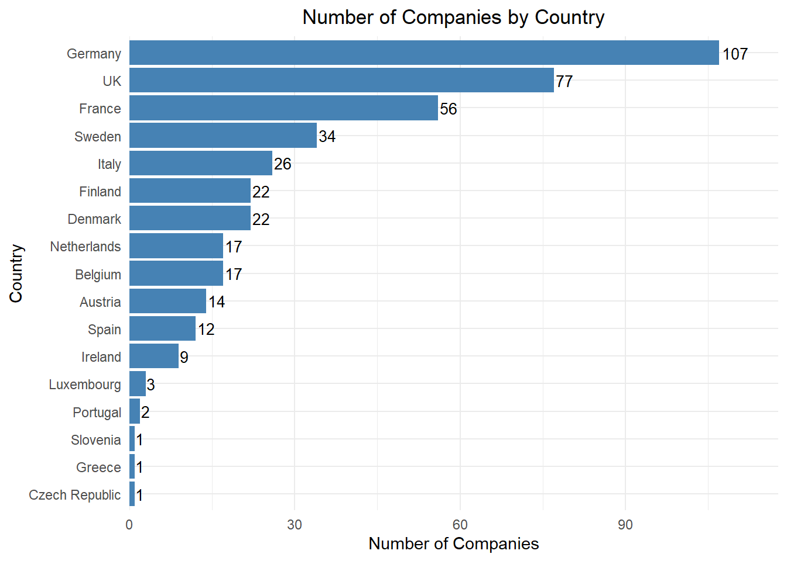
europe_map <- ne_countries(scale = "medium", returnclass = "sf") %>%
filter(region_un == "Europe")
company_count_country <- data.frame(
country = c("Germany", "United Kingdom", "France", "Sweden", "Italy",
"Finland", "Denmark", "Netherlands", "Belgium", "Austria",
"Spain", "Ireland", "Luxembourg", "Portugal",
"Slovenia", "Greece", "Czechia"),
n_companies = c(107, 77, 56, 34, 26, 22, 22, 17, 17, 14, 12, 9, 3, 2, 1, 1, 1)
)
europe_map_data <- europe_map %>%
left_join(company_count_country, by = c("name" = "country"))
europe_map_data <- europe_map_data %>%
mutate(
centroid = st_point_on_surface(geometry),
lon = st_coordinates(centroid)[, 1],
lat = st_coordinates(centroid)[, 2],
text_color = ifelse(n_companies >= 50, "#c6dbef", "black")
)
ggplot(europe_map_data) +
geom_sf(aes(fill = n_companies), color = "white", size = 0.2) +
scale_fill_gradient(
low = "#c6dbef", high = "#08306b", na.value = "gray90", name = "Company Count"
) +
geom_text(
data = europe_map_data %>% filter(!is.na(n_companies)),
aes(x = lon, y = lat, label = paste0(n_companies, "\n", name), color = text_color),
size = 2.8, lineheight = 0.9,
show.legend = FALSE
) +
scale_color_identity() +
coord_sf(xlim = c(-25, 45), ylim = c(34, 72), expand = FALSE) +
labs(title = "Number of Companies by Country in Europe") +
theme_minimal(base_size = 13) +
theme(
plot.title = element_text(hjust = 0.5, face = "bold"),
legend.title = element_text(face = "bold"),
panel.grid = element_blank(),
axis.title = element_blank(),
axis.text = element_blank(),
axis.ticks = element_blank())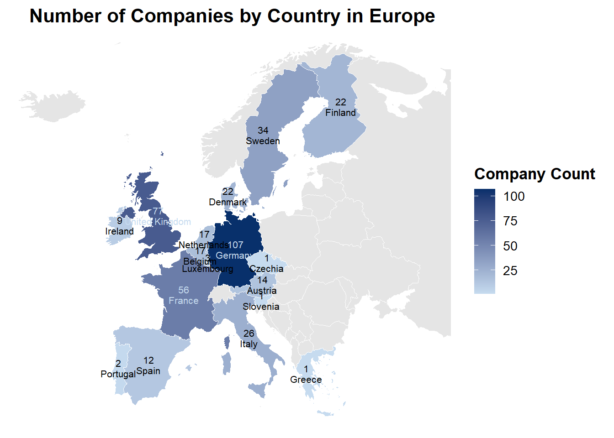
The bar chart shows the number of companies per country that consistently appeared in the EU R&D ranking from 2010 to 2019. Germany leads with 107 firms, followed by the UK (77), France (56), and Sweden (34). These top contributors reflect the strong and stable innovation presence of these countries in the EU during this decade. Other countries like Italy, Finland, and Denmark also maintain a noticeable presence, while the remaining countries contribute relatively fewer consistent players.
2.Number of companies by industry (ICB sector)
wide_data$icb_sector <- dplyr::recode(wide_data$icb_sector,
"Telecommunications Equipment" = "Technology Hardware & Equipment",
"Computer Hardware" = "Technology Hardware & Equipment",
"Semiconductors" = "Technology Hardware & Equipment",
"Electrical Components & Equipment" = "Electronic & Electrical Equipment",
"Electronic Equipment" = "Electronic & Electrical Equipment",
"Pharmaceuticals" = "Pharmaceuticals & Biotechnology",
"Biotechnology" = "Pharmaceuticals & Biotechnology",
"Commercial Vehicles & Trucks" = "Industrial Engineering",
"Industrial Machinery" = "Industrial Engineering",
"Software" = "Software & Computer Services",
"Computer Services" = "Software & Computer Services",
"Other Financials" = "Financial Services")
company_count_industry <- wide_data %>%
group_by(icb_sector) %>%
summarise(n_companies = n_distinct(company)) %>%
arrange(desc(n_companies))
ggplot(company_count_industry, aes(x = reorder(icb_sector, n_companies), y = n_companies)) +
geom_segment(aes(xend = icb_sector, y = 0, yend = n_companies), color = "gray70") +
geom_point(color = "darkgreen", size = 3) +
geom_text(aes(label = n_companies), hjust = -0.8, size = 3.2) +
coord_flip() +
labs(
title = "Number of Companies by Industry (ICB Sector)",
x = "ICB Sector",
y = "Number of Companies"
) +
theme_minimal() +
theme(
plot.title = element_text(hjust = 0.5),
axis.text.y = element_text(size = 7)
) +
scale_y_continuous(expand = expansion(mult = c(0, 0.2))) 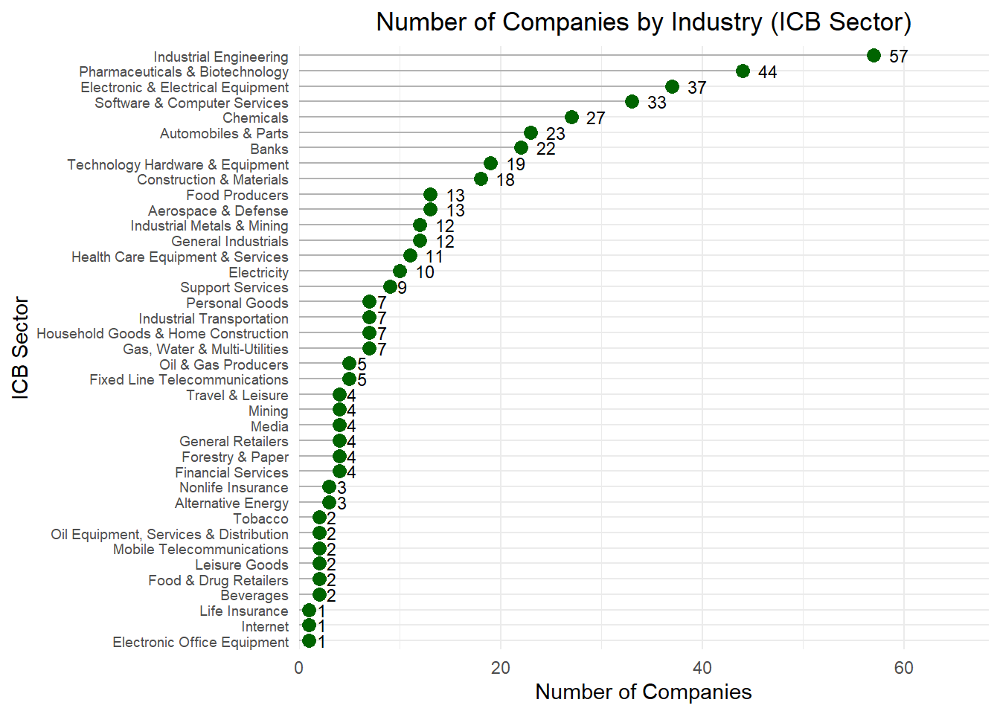
The dot plot illustrates the number of companies in each ICB sector that consistently appeared in the EU R&D rankings from 2010 to 2019. The leading sectors are Industrial Engineering (57 firms), Industrial Machinery (47), and Pharmaceuticals & Biotechnology (44), highlighting the central role of these sectors in sustained innovation.
3.Average number of employees and net sales over time
avg_stats <- wide_data %>%
group_by(year) %>%
summarise(
avg_employees = mean(employees, na.rm = TRUE),
avg_sales = mean(sales_million, na.rm = TRUE)
)
ggplot(avg_stats, aes(x = year, y = avg_employees)) +
geom_line(color = "blue", size = 1.2) +
labs(title = "Average Number of Employees Over Time", x = "Year", y = "Employees") +
scale_x_continuous(breaks = avg_stats$year) +
theme_minimal()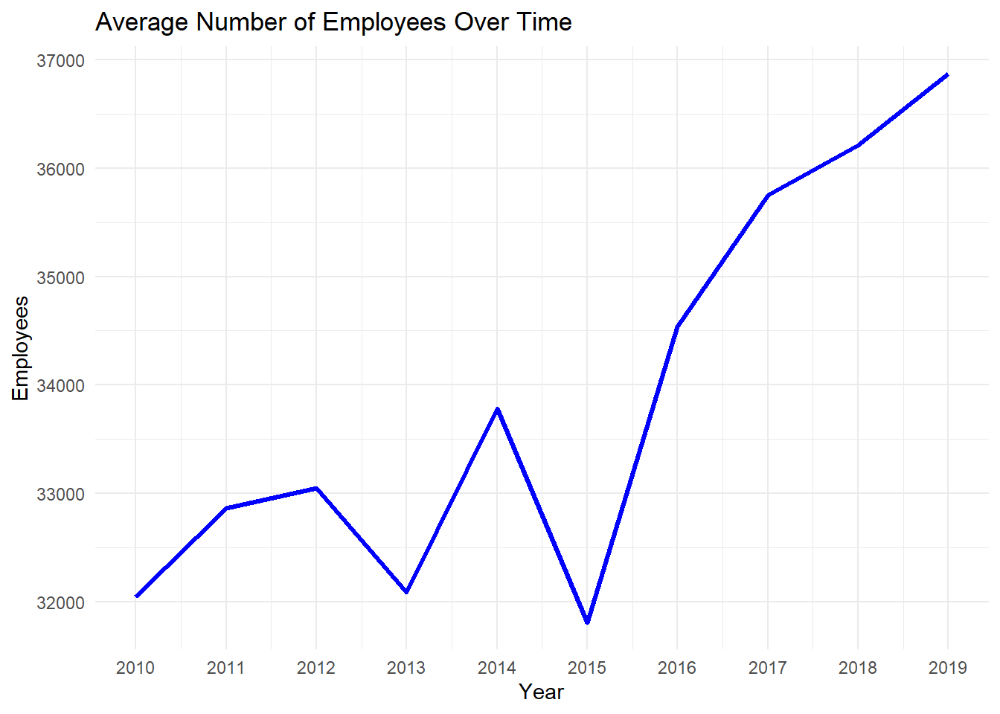
ggplot(avg_stats, aes(x = year, y = avg_sales)) +
geom_line(color = "purple", size = 1.2) +
labs(title = "Average Net Sales Over Time", x = "Year", y = "Net Sales (Million €)") +
scale_x_continuous(breaks = avg_stats$year) +
theme_minimal()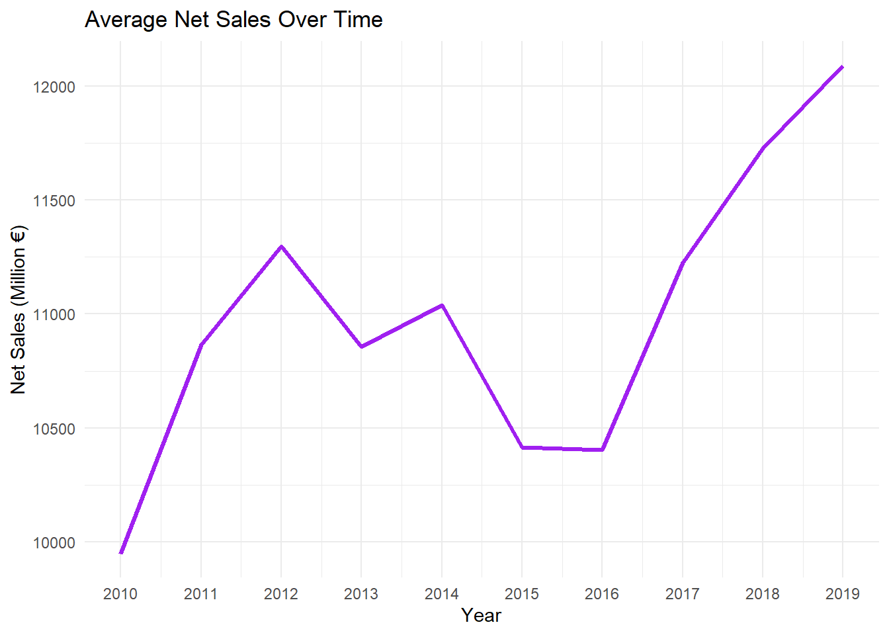
Employees: The average number of employees remained relatively stable until around 2015, with minor fluctuations. From 2016 onwards, there was a noticeable increase in employment, indicating that firms were scaling up operations. This may reflect not just recovery but also structural growth in the industries covered.
Net Sales: The average net sales showed steady growth from 2010 to 2012, followed by fluctuations between 2013 and 2016. After 2016, net sales increased consistently and significantly, peaking in 2019. This trend suggests a post-crisis recovery and a likely expansion period in the EU corporate landscape during the late 2010s.
4.Analyze Rank Stability Across Companies (2010–2019):
wide_data <- wide_data %>%
mutate(rank = as.numeric(rank))
rank_stability <- wide_data %>%
group_by(company) %>%
summarise(
avg_rank = mean(rank, na.rm = TRUE),
sd_rank = sd(rank, na.rm = TRUE)
) %>%
arrange(sd_rank)
head(rank_stability, 10)# A tibble: 10 × 3
company avg_rank sd_rank
<chr> <dbl> <dbl>
1 VOLKSWAGEN 1 0
2 DAIMLER 2.1 0.316
3 SIEMENS 5.8 0.789
4 ROBERT BOSCH 4.5 1.51
5 BANCO SANTANDER 28.5 1.96
6 GLAXOSMITHKLINE 7.8 2.04
7 NOVO NORDISK 24.9 2.28
8 BAYER 9.3 2.31
9 ERICSSON 11.3 2.41
10 BASF 23.4 2.41 top_stable <- rank_stability %>% slice_min(sd_rank, n = 20)
ggplot(top_stable, aes(x = reorder(company, sd_rank), y = sd_rank)) +
geom_col(fill = "orange") +
coord_flip() +
labs(
title = "Top 20 Most Stable Companies by Rank (2010–2019)",
x = "Company",
y = "Standard Deviation of Rank"
) +
theme_minimal()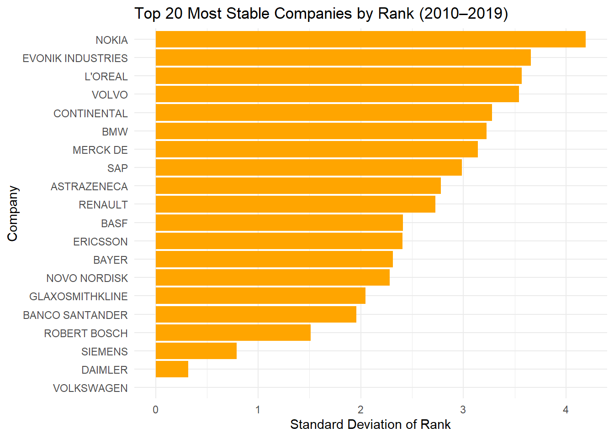
As shown in the chart, Volkswagen stands out with the most stable position, consistently ranked first across the entire period (SD = 0). Other firms like Daimler, Siemens, and Robert Bosch also show strong rank stability, indicating sustained investment and leadership in R&D.
On the other hand, companies such as Nokia, Evonik Industries, and L’Oréal demonstrate relatively higher rank variability, reflecting either fluctuations in R&D spending or changes in their relative position in the European innovation landscape.
This analysis highlights a core group of firms with long-term commitment to R&D, which can be important for further modeling or policy discussion regarding consistent innovation performance.
cor_data <- wide_data %>%
select(
rd_million, rd_growth_1y_percent, rd_intensity_percent,
sales_million, sales_growth_1y_percent,
employees, employees_growth_1y_percent,
capex_million, capex_growth_1y_percent, capex_intensity_percent,
profit_million, profit_growth_1y_percent, profitability_percent,
market_cap_million, market_cap_growth_1y_percent,rank
) %>%
drop_na()
cor_matrix <- cor(cor_data, use = "complete.obs")
ggcorrplot(
cor_matrix,
method = "circle",
type = "lower",
lab = TRUE,
lab_size = 3,
colors = c("red", "white", "blue"),
title = "Correlation Matrix of Key Firm-Level Variables",
ggtheme = theme_minimal()
)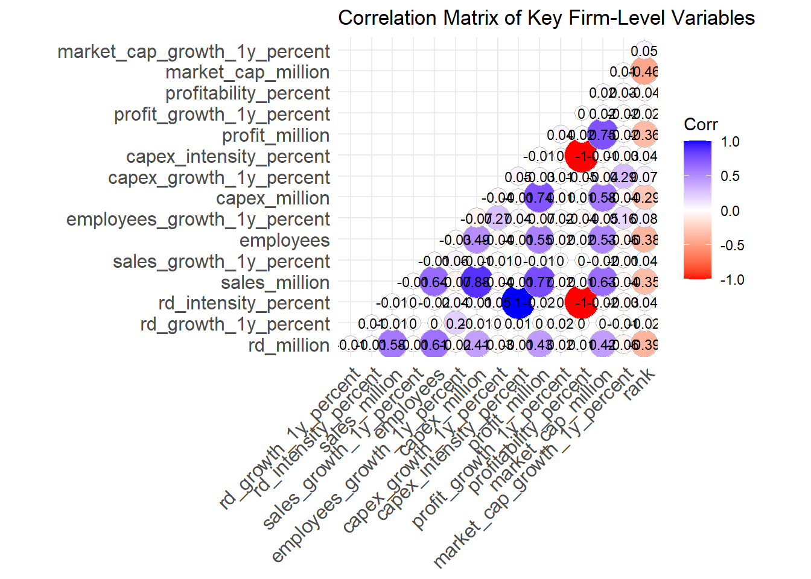
R&D and Net Sales: There is a moderate positive correlation between R&D expenditure (rd_million) and net sales (sales_million) at 0.58, suggesting that firms with higher R&D investment tend to achieve higher sales revenue. Similarly, R&D is positively correlated with the number of employees (employees, 0.61), indicating that R&D-intensive firms typically have larger workforces.
Profit and Market Capitalization: The correlation between profit (profit_million) and market capitalization (market_cap_million) is 0.75, showing that more profitable firms generally have higher market value.
Capital Expenditure and Sales: Capital expenditure (capex_million) shows a strong positive correlation with net sales (sales_million) at 0.88, suggesting that firms with higher sales volumes are also more likely to make substantial capital investments.
Negative Correlations with Rank: The variable rank (where a lower number indicates a better ranking) is negatively correlated with key performance indicators like R&D, sales, and employees. This aligns with expectations—top-ranked firms tend to have more resources, higher output, and greater investment in R&D.
Input datasets
patents_data <- read.csv("patents count.csv")
long_patents_data <- patents_data %>%
pivot_longer(
cols = starts_with("X"),
names_to = "year",
names_prefix = "X",
values_to = "patent_count"
) %>%
mutate(year = as.integer(year))
merged_data <- left_join(wide_data, long_patents_data, by = c("company", "year"))
merged_data <- merged_data %>%
mutate(rd_intensity_per = (rd_million / sales_million) * 100)Missing value analysis
missing_percent <- round(colMeans(is.na(merged_data)) * 100, 2)
missing_percent company year
0.00 0.00
region country
0.00 0.00
icb_sector rank
0.00 0.00
rd_million rd_growth_1y_percent
0.00 0.10
rd_intensity_percent sales_million
1.70 0.84
sales_growth_1y_percent employees
1.68 1.68
employees_growth_1y_percent capex_million
2.59 19.59
capex_growth_1y_percent capex_intensity_percent
23.12 5.30
profit_million profit_growth_1y_percent
11.22 12.11
profitability_percent market_cap_million
2.23 56.81
market_cap_growth_1y_percent patent_count
57.34 0.00
rd_intensity_per
0.84 Due to the fact that the variable market_cap_growth_1y_percent (one-year market capitalization growth rate) has a high proportion of missing values (57.34%) and is a derived metric based on market_cap_million (market capitalization in million euros), it was excluded from further analysis. Including a variable with such a large amount of missing data could compromise the robustness of the analysis, and since the growth rate can be calculated from existing market cap values, retaining it was deemed unnecessary. Removing this variable helps simplify the dataset and maintain analytical clarity.
merged_data <- merged_data |>
select(-market_cap_growth_1y_percent,-market_cap_million)Given the presence of missing values across several key financial variables—such as capex_growth_1y_percent (23.12%), capex_million (19.59%), profit_million (11.22%), and profit_growth_1y_percent (12.11%)—I decided to perform imputation rather than removing the affected observations or variables. Since many of these indicators are important for the analysis, imputing missing values helps preserve the dataset’s completeness and analytical value.
To address the 19.59% missing rate in capex_million, imputation was applied in order to preserve analytical integrity and avoid unnecessary data loss:
ggplot(merged_data, aes(log10(capex_million + 1))) +
geom_histogram(binwidth = 0.1, color = "skyblue3", fill = "skyblue") +
ggtitle("Log-transformed Capex Distribution") +
xlab("Log10(Capex + 1)") +
ylab("Count") +
theme_classic() +
theme(plot.title = element_text(size = 18))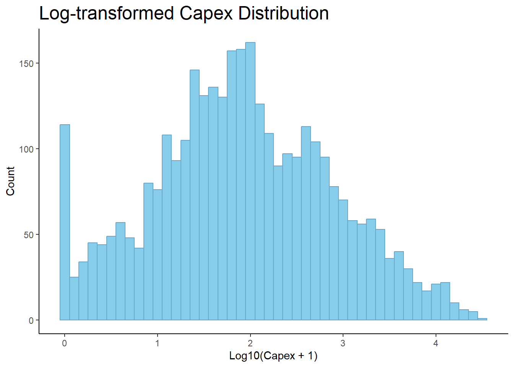
Among several variables with missing values, capex_million (capital expenditure) was selected as a representative example for imputation comparison due to its relatively high missing rate (19.59%) and its importance as a financial indicator of corporate innovation investment. By focusing on this variable, I aim to evaluate and compare the effectiveness of different imputation strategies and their implications for subsequent data modeling and analysis.
Selection of imputation strategy
value_imputation <- merged_data |>
mutate(
original = capex_million,
imputed_zero = if_else(is.na(capex_million), 0, capex_million),
imputed_mean = if_else(is.na(capex_million), mean(capex_million, na.rm = TRUE), capex_million),
imputed_median = if_else(is.na(capex_million), median(capex_million, na.rm = TRUE), capex_million)
)
variables <- c("original", "imputed_zero", "imputed_mean", "imputed_median")
titles <- c("Original Capex Distribution", "Zero Imputation", "Mean Imputation", "Median Imputation")
colors <- c("skyblue3", "#15ad4f", "#6a6ad9", "#e65100")
value_imputation_long <- value_imputation %>%
pivot_longer(all_of(variables), names_to = "method", values_to = "value")
plots <- value_imputation_long %>%
mutate(title = factor(method, levels = variables, labels = titles)) %>%
ggplot(aes(x = log10(value + 1), fill = title)) +
geom_histogram(binwidth = 0.1, color = "#808080") +
facet_wrap(~title, scales = "free_y") +
scale_fill_manual(values = colors) +
labs(x = "Log10(Capex + 1)", y = "Count") +
theme_classic() +
theme(legend.position = "none", plot.title = element_text(size = 18))
print(plots)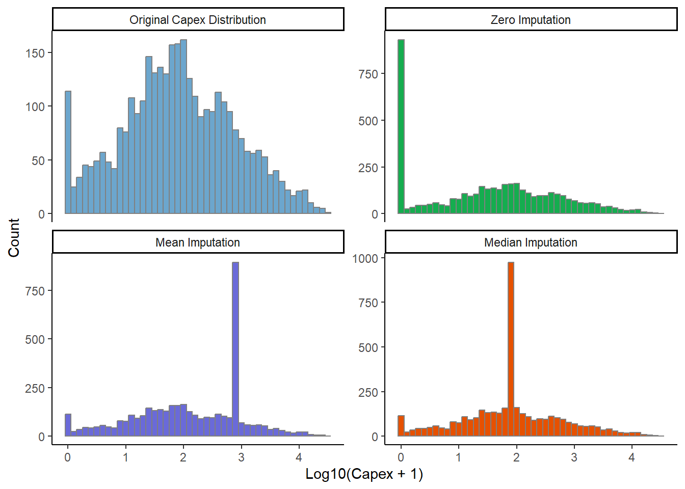
These imputation methods differ significantly from the original distribution of capex_million. Zero imputation artificially creates a large number of zero values, severely distorting the distribution. Mean and median imputations, while simple and commonly used, concentrate the imputed values at a single point, resulting in unnatural peaks and a loss of the original distribution shape. Therefore, these methods are not suitable for highly skewed financial data.
Mice imputation:
merged_numeric <- merged_data %>%
select(capex_million, rd_million, sales_million, employees, profit_million)
mice_imputed <- data.frame(
original = merged_data$capex_million,
imputed_pmm = complete(mice(merged_numeric, m = 5, method = "pmm", seed = 123))$capex_million,
imputed_cart = complete(mice(merged_numeric, m = 5, method = "cart", seed = 123))$capex_million,
imputed_lasso = complete(mice(merged_numeric, m = 5, method = "lasso.norm", seed = 123))$capex_million
)
iter imp variable
1 1 capex_million sales_million employees profit_million
1 2 capex_million sales_million employees profit_million
1 3 capex_million sales_million employees profit_million
1 4 capex_million sales_million employees profit_million
1 5 capex_million sales_million employees profit_million
2 1 capex_million sales_million employees profit_million
2 2 capex_million sales_million employees profit_million
2 3 capex_million sales_million employees profit_million
2 4 capex_million sales_million employees profit_million
2 5 capex_million sales_million employees profit_million
3 1 capex_million sales_million employees profit_million
3 2 capex_million sales_million employees profit_million
3 3 capex_million sales_million employees profit_million
3 4 capex_million sales_million employees profit_million
3 5 capex_million sales_million employees profit_million
4 1 capex_million sales_million employees profit_million
4 2 capex_million sales_million employees profit_million
4 3 capex_million sales_million employees profit_million
4 4 capex_million sales_million employees profit_million
4 5 capex_million sales_million employees profit_million
5 1 capex_million sales_million employees profit_million
5 2 capex_million sales_million employees profit_million
5 3 capex_million sales_million employees profit_million
5 4 capex_million sales_million employees profit_million
5 5 capex_million sales_million employees profit_million
iter imp variable
1 1 capex_million sales_million employees profit_million
1 2 capex_million sales_million employees profit_million
1 3 capex_million sales_million employees profit_million
1 4 capex_million sales_million employees profit_million
1 5 capex_million sales_million employees profit_million
2 1 capex_million sales_million employees profit_million
2 2 capex_million sales_million employees profit_million
2 3 capex_million sales_million employees profit_million
2 4 capex_million sales_million employees profit_million
2 5 capex_million sales_million employees profit_million
3 1 capex_million sales_million employees profit_million
3 2 capex_million sales_million employees profit_million
3 3 capex_million sales_million employees profit_million
3 4 capex_million sales_million employees profit_million
3 5 capex_million sales_million employees profit_million
4 1 capex_million sales_million employees profit_million
4 2 capex_million sales_million employees profit_million
4 3 capex_million sales_million employees profit_million
4 4 capex_million sales_million employees profit_million
4 5 capex_million sales_million employees profit_million
5 1 capex_million sales_million employees profit_million
5 2 capex_million sales_million employees profit_million
5 3 capex_million sales_million employees profit_million
5 4 capex_million sales_million employees profit_million
5 5 capex_million sales_million employees profit_million
iter imp variable
1 1 capex_million sales_million employees profit_million
1 2 capex_million sales_million employees profit_million
1 3 capex_million sales_million employees profit_million
1 4 capex_million sales_million employees profit_million
1 5 capex_million sales_million employees profit_million
2 1 capex_million sales_million employees profit_million
2 2 capex_million sales_million employees profit_million
2 3 capex_million sales_million employees profit_million
2 4 capex_million sales_million employees profit_million
2 5 capex_million sales_million employees profit_million
3 1 capex_million sales_million employees profit_million
3 2 capex_million sales_million employees profit_million
3 3 capex_million sales_million employees profit_million
3 4 capex_million sales_million employees profit_million
3 5 capex_million sales_million employees profit_million
4 1 capex_million sales_million employees profit_million
4 2 capex_million sales_million employees profit_million
4 3 capex_million sales_million employees profit_million
4 4 capex_million sales_million employees profit_million
4 5 capex_million sales_million employees profit_million
5 1 capex_million sales_million employees profit_million
5 2 capex_million sales_million employees profit_million
5 3 capex_million sales_million employees profit_million
5 4 capex_million sales_million employees profit_million
5 5 capex_million sales_million employees profit_millionmice_imputed$imputed_rf <- complete(mice(merged_numeric, m = 5, method = "rf", seed = 123))$capex_million
iter imp variable
1 1 capex_million sales_million employees profit_million
1 2 capex_million sales_million employees profit_million
1 3 capex_million sales_million employees profit_million
1 4 capex_million sales_million employees profit_million
1 5 capex_million sales_million employees profit_million
2 1 capex_million sales_million employees profit_million
2 2 capex_million sales_million employees profit_million
2 3 capex_million sales_million employees profit_million
2 4 capex_million sales_million employees profit_million
2 5 capex_million sales_million employees profit_million
3 1 capex_million sales_million employees profit_million
3 2 capex_million sales_million employees profit_million
3 3 capex_million sales_million employees profit_million
3 4 capex_million sales_million employees profit_million
3 5 capex_million sales_million employees profit_million
4 1 capex_million sales_million employees profit_million
4 2 capex_million sales_million employees profit_million
4 3 capex_million sales_million employees profit_million
4 4 capex_million sales_million employees profit_million
4 5 capex_million sales_million employees profit_million
5 1 capex_million sales_million employees profit_million
5 2 capex_million sales_million employees profit_million
5 3 capex_million sales_million employees profit_million
5 4 capex_million sales_million employees profit_million
5 5 capex_million sales_million employees profit_millionvariables <- c("original", "imputed_pmm", "imputed_cart", "imputed_lasso", "imputed_rf")
titles <- c(
"Original Capex Distribution",
"PMM-imputed Distribution",
"CART-imputed Distribution",
"Lasso-imputed Distribution",
"RF-imputed Distribution"
)
colors_fill <- c("skyblue", "#15ad4f", "#6a6ad9", "#e65100", "#ffc107")
mice_imputed_long <- mice_imputed %>%
pivot_longer(all_of(variables), names_to = "method", values_to = "value")
plots <- mice_imputed_long %>%
mutate(title = factor(method, levels = variables, labels = titles)) %>%
ggplot(aes(x = log10(value + 1), fill = title)) +
geom_histogram(binwidth = 0.1, color = "#808080", position = "identity") +
facet_wrap(~title, scales = "free_y") +
scale_fill_manual(values = colors_fill) +
labs(x = "Log10(Capex + 1)", y = "Count") +
theme_classic() +
theme(legend.position = "none", plot.title = element_text(size = 18))
print(plots)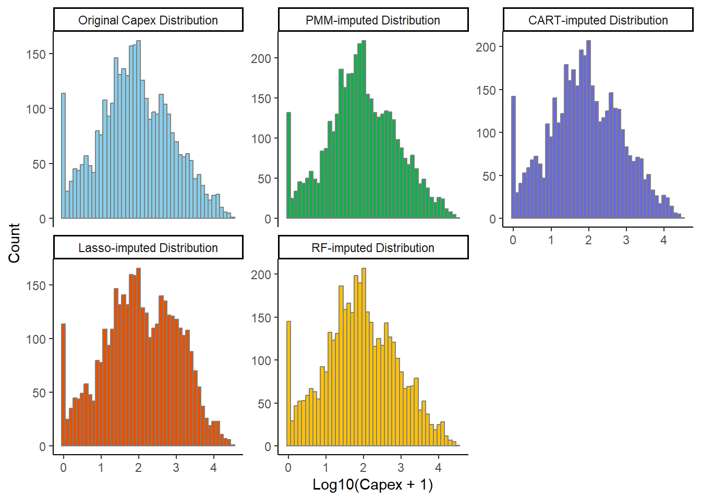
Miss Random Forest :
missForest_result <- missForest(as.data.frame(merged_numeric), ntree = 15)
missForest_imputed <- data.frame(
original = merged_numeric$capex_million,
imputed_missForest = missForest_result$ximp$capex_million)
variables <- c("original", "imputed_missForest")
titles <- c("Original Capex Distribution", "MissForest-imputed Distribution")
colors_fill <- c("skyblue", "#FFD700")
colors_border <- c("skyblue3", "#808080")
missForest_imputed_long <- missForest_imputed %>%
pivot_longer(all_of(variables), names_to = "method", values_to = "value")
plots <- missForest_imputed_long %>%
mutate(title = factor(method, levels = variables, labels = titles)) %>%
ggplot(aes(x = log10(value + 1), fill = title)) +
geom_histogram(binwidth = 0.1, color = "#808080", position = "identity") +
facet_wrap(~title, scales = "free_y") +
scale_fill_manual(values = colors_fill) +
theme_classic() +
theme(legend.position = "none")
print(plots)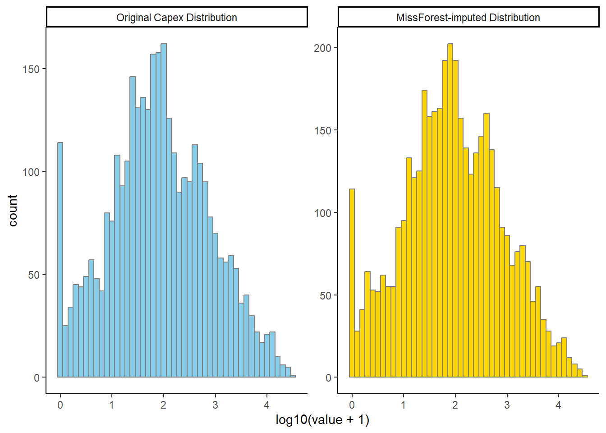
We applied and compared several imputation methods to handle the missing values in the capex_million variable, including Zero imputation, Mean imputation, Median imputation, Predictive Mean Matching (PMM), CART (Classification and Regression Trees), Lasso regression, Random Forest (RF), and MissForest.
The simpler methods—Zero, Mean, and Median imputation—introduced noticeable distortion. Zero imputation artificially inflated the frequency of zero values, while mean and median imputation caused unrealistic peaks at single values, which misrepresents the true underlying distribution.
Advanced methods such as PMM, CART, and Lasso performed better, but still introduced some smoothing or loss of variance compared to the original data. While these approaches attempt to model relationships between variables, they may not fully capture the complex, non-linear structure of financial data.
Among all, Random Forest (RF) imputation stood out as the most effective. It maintained the skewness, variability, and distribution shape of the original capex_million variable most accurately. This is likely due to RF’s ensemble learning approach, which can model interactions and non-linearities effectively without overfitting.
Therefore, RF was selected as the most appropriate imputation method for this analysis, especially considering the financial nature and skewed distribution of the variable.
Data imputation
vars_to_impute <- c(
"rd_growth_1y_percent", "rd_intensity_percent", "sales_million",
"sales_growth_1y_percent", "employees", "employees_growth_1y_percent",
"capex_million", "capex_growth_1y_percent", "capex_intensity_percent",
"profit_million", "profit_growth_1y_percent", "profitability_percent"
)
merged_numeric <- merged_data %>% select(all_of(vars_to_impute))
imputed_rf <- mice(merged_numeric, m = 5, method = "rf", seed = 123)
iter imp variable
1 1 rd_growth_1y_percent rd_intensity_percent sales_million sales_growth_1y_percent employees employees_growth_1y_percent capex_million capex_growth_1y_percent capex_intensity_percent profit_million profit_growth_1y_percent profitability_percent
1 2 rd_growth_1y_percent rd_intensity_percent sales_million sales_growth_1y_percent employees employees_growth_1y_percent capex_million capex_growth_1y_percent capex_intensity_percent profit_million profit_growth_1y_percent profitability_percent
1 3 rd_growth_1y_percent rd_intensity_percent sales_million sales_growth_1y_percent employees employees_growth_1y_percent capex_million capex_growth_1y_percent capex_intensity_percent profit_million profit_growth_1y_percent profitability_percent
1 4 rd_growth_1y_percent rd_intensity_percent sales_million sales_growth_1y_percent employees employees_growth_1y_percent capex_million capex_growth_1y_percent capex_intensity_percent profit_million profit_growth_1y_percent profitability_percent
1 5 rd_growth_1y_percent rd_intensity_percent sales_million sales_growth_1y_percent employees employees_growth_1y_percent capex_million capex_growth_1y_percent capex_intensity_percent profit_million profit_growth_1y_percent profitability_percent
2 1 rd_growth_1y_percent rd_intensity_percent sales_million sales_growth_1y_percent employees employees_growth_1y_percent capex_million capex_growth_1y_percent capex_intensity_percent profit_million profit_growth_1y_percent profitability_percent
2 2 rd_growth_1y_percent rd_intensity_percent sales_million sales_growth_1y_percent employees employees_growth_1y_percent capex_million capex_growth_1y_percent capex_intensity_percent profit_million profit_growth_1y_percent profitability_percent
2 3 rd_growth_1y_percent rd_intensity_percent sales_million sales_growth_1y_percent employees employees_growth_1y_percent capex_million capex_growth_1y_percent capex_intensity_percent profit_million profit_growth_1y_percent profitability_percent
2 4 rd_growth_1y_percent rd_intensity_percent sales_million sales_growth_1y_percent employees employees_growth_1y_percent capex_million capex_growth_1y_percent capex_intensity_percent profit_million profit_growth_1y_percent profitability_percent
2 5 rd_growth_1y_percent rd_intensity_percent sales_million sales_growth_1y_percent employees employees_growth_1y_percent capex_million capex_growth_1y_percent capex_intensity_percent profit_million profit_growth_1y_percent profitability_percent
3 1 rd_growth_1y_percent rd_intensity_percent sales_million sales_growth_1y_percent employees employees_growth_1y_percent capex_million capex_growth_1y_percent capex_intensity_percent profit_million profit_growth_1y_percent profitability_percent
3 2 rd_growth_1y_percent rd_intensity_percent sales_million sales_growth_1y_percent employees employees_growth_1y_percent capex_million capex_growth_1y_percent capex_intensity_percent profit_million profit_growth_1y_percent profitability_percent
3 3 rd_growth_1y_percent rd_intensity_percent sales_million sales_growth_1y_percent employees employees_growth_1y_percent capex_million capex_growth_1y_percent capex_intensity_percent profit_million profit_growth_1y_percent profitability_percent
3 4 rd_growth_1y_percent rd_intensity_percent sales_million sales_growth_1y_percent employees employees_growth_1y_percent capex_million capex_growth_1y_percent capex_intensity_percent profit_million profit_growth_1y_percent profitability_percent
3 5 rd_growth_1y_percent rd_intensity_percent sales_million sales_growth_1y_percent employees employees_growth_1y_percent capex_million capex_growth_1y_percent capex_intensity_percent profit_million profit_growth_1y_percent profitability_percent
4 1 rd_growth_1y_percent rd_intensity_percent sales_million sales_growth_1y_percent employees employees_growth_1y_percent capex_million capex_growth_1y_percent capex_intensity_percent profit_million profit_growth_1y_percent profitability_percent
4 2 rd_growth_1y_percent rd_intensity_percent sales_million sales_growth_1y_percent employees employees_growth_1y_percent capex_million capex_growth_1y_percent capex_intensity_percent profit_million profit_growth_1y_percent profitability_percent
4 3 rd_growth_1y_percent rd_intensity_percent sales_million sales_growth_1y_percent employees employees_growth_1y_percent capex_million capex_growth_1y_percent capex_intensity_percent profit_million profit_growth_1y_percent profitability_percent
4 4 rd_growth_1y_percent rd_intensity_percent sales_million sales_growth_1y_percent employees employees_growth_1y_percent capex_million capex_growth_1y_percent capex_intensity_percent profit_million profit_growth_1y_percent profitability_percent
4 5 rd_growth_1y_percent rd_intensity_percent sales_million sales_growth_1y_percent employees employees_growth_1y_percent capex_million capex_growth_1y_percent capex_intensity_percent profit_million profit_growth_1y_percent profitability_percent
5 1 rd_growth_1y_percent rd_intensity_percent sales_million sales_growth_1y_percent employees employees_growth_1y_percent capex_million capex_growth_1y_percent capex_intensity_percent profit_million profit_growth_1y_percent profitability_percent
5 2 rd_growth_1y_percent rd_intensity_percent sales_million sales_growth_1y_percent employees employees_growth_1y_percent capex_million capex_growth_1y_percent capex_intensity_percent profit_million profit_growth_1y_percent profitability_percent
5 3 rd_growth_1y_percent rd_intensity_percent sales_million sales_growth_1y_percent employees employees_growth_1y_percent capex_million capex_growth_1y_percent capex_intensity_percent profit_million profit_growth_1y_percent profitability_percent
5 4 rd_growth_1y_percent rd_intensity_percent sales_million sales_growth_1y_percent employees employees_growth_1y_percent capex_million capex_growth_1y_percent capex_intensity_percent profit_million profit_growth_1y_percent profitability_percent
5 5 rd_growth_1y_percent rd_intensity_percent sales_million sales_growth_1y_percent employees employees_growth_1y_percent capex_million capex_growth_1y_percent capex_intensity_percent profit_million profit_growth_1y_percent profitability_percentimputed_data_rf <- complete(imputed_rf, 1)
merged_data[vars_to_impute] <- imputed_data_rfround(colMeans(is.na(merged_data)) * 100, 2) company year
0.00 0.00
region country
0.00 0.00
icb_sector rank
0.00 0.00
rd_million rd_growth_1y_percent
0.00 0.00
rd_intensity_percent sales_million
0.00 0.00
sales_growth_1y_percent employees
0.00 0.00
employees_growth_1y_percent capex_million
0.00 0.00
capex_growth_1y_percent capex_intensity_percent
0.00 0.00
profit_million profit_growth_1y_percent
0.00 0.00
profitability_percent patent_count
0.00 0.00
rd_intensity_per
0.84 After imputation, we confirmed that all target variables no longer contain missing values, ensuring the dataset is complete and ready for subsequent analysis.
merged_data <- merged_data %>%
arrange(company, year) %>%
mutate(patent_intensity_sales = patent_count / sales_million)
vars <- c("rd_million", "rd_growth_1y_percent", "rd_intensity_percent",
"sales_million", "sales_growth_1y_percent",
"patent_count", "patent_intensity_sales")
clean_data <- merged_data %>%
select(all_of(vars)) %>%
filter_all(all_vars(is.finite(.)))
desc <- psych::describe(clean_data)[, c("mean", "sd", "min", "median", "max", "n")]
desc <- round(desc, 2)
desc$Variable <- c("R&D Expenditure (million)",
"R&D Growth Rate (%)",
"R&D Intensity (%)",
"Sales (million)",
"Sales Growth Rate (%)",
"Patent Count",
"Patent Intensity (per €1M Sales)")
desc <- desc[, c("Variable", "mean", "sd", "min", "median", "max", "n")]
flextable(desc) %>%
set_header_labels(
mean = "Mean",
sd = "SD",
min = "Min",
median = "Median",
max = "Max",
n = "N",
Variable = "Variable"
) %>%
theme_booktabs() %>%
autofit() %>%
bold(part = "header") %>%
align(align = "left", part = "all") %>%
font(fontname = "Times New Roman", part = "all") Variable | Mean | SD | Min | Median | Max | N |
|---|---|---|---|---|---|---|
R&D Expenditure (million) | 307.66 | 963.22 | 4.74 | 57.45 | 14,306.00 | 4,135 |
R&D Growth Rate (%) | 10.69 | 43.28 | -96.08 | 6.49 | 1,183.33 | 4,135 |
R&D Intensity (%) | 1,080.22 | 38,877.57 | -6.28 | 3.40 | 2,088,200.00 | 4,135 |
Sales (million) | 11,024.19 | 27,709.38 | -4,383.00 | 2,429.10 | 363,375.06 | 4,135 |
Sales Growth Rate (%) | 25.95 | 806.43 | -1,038.38 | 4.50 | 44,594.20 | 4,135 |
Patent Count | 163.78 | 579.31 | 0.00 | 18.00 | 8,235.00 | 4,135 |
Patent Intensity (per €1M Sales) | 4.57 | 171.80 | -0.30 | 0.01 | 8,000.00 | 4,135 |
selected_data <- merged_data %>%
select(
company,
year,
region,
country,
icb_sector,
rank,
rd_million,
rd_growth_1y_percent,
rd_intensity_percent,
sales_million,
sales_growth_1y_percent,
patent_count,
patent_intensity_sales)
variable_dict <- tibble::tibble(
name = c(
"company", "year", "region", "country", "icb_sector", "rank",
"rd_million", "rd_growth_1y_percent", "rd_intensity_percent",
"sales_million", "sales_growth_1y_percent",
"patent_count", "patent_intensity_sales"),
description = c(
"Legal name of the firm as reported in the dataset",
"calendar year corresponding to the observation",
"Broad geographic region where the firm is based",
"Country in which the firm’s headquarters is located",
"Industry classification based on the ICB standard",
"Rank based on R&D expenditure, from high to low",
"Total R&D expenditures reported by the firm for the year",
"Percentage change in R&D expenditure compared to the previous year",
"Ratio of R&D expenditure to total sales revenue",
"Total annual firm sales revenue",
"Percentage change in firm sales compared to the previous year",
"Total number of patents collected from Espacenet",
"Patent applications scaled by sales")
,
unit = c(
"-", "Year", "-", "-", "-", "Index",
"Million EUR", "Percent", "Percent",
"Million EUR", "Percent",
"Count", "Per million EUR" ))
variable_dict %>%
gt() %>%
cols_label(
name = "Variable Name",
description = "Description",
unit = "Unit"
) %>%
tab_options(
table.font.names = "Times New Roman",
column_labels.font.weight = "bold",
table.align = "center",
table.width = pct(100),
row.striping.background_color = "gray95",
data_row.padding = px(2),
heading.padding = px(2),
column_labels.padding = px(2),
table.font.size = 12
) %>%
fmt_missing(
columns = everything(),
missing_text = "-"
) %>%
tab_style(
style = cell_text(weight = "bold"),
locations = cells_body()
) %>%
tab_style(
style = cell_text(weight = "bold"),
locations = cells_column_labels(everything()))| Variable Name | Description | Unit |
|---|---|---|
| company | Legal name of the firm as reported in the dataset | - |
| year | calendar year corresponding to the observation | Year |
| region | Broad geographic region where the firm is based | - |
| country | Country in which the firm’s headquarters is located | - |
| icb_sector | Industry classification based on the ICB standard | - |
| rank | Rank based on R&D expenditure, from high to low | Index |
| rd_million | Total R&D expenditures reported by the firm for the year | Million EUR |
| rd_growth_1y_percent | Percentage change in R&D expenditure compared to the previous year | Percent |
| rd_intensity_percent | Ratio of R&D expenditure to total sales revenue | Percent |
| sales_million | Total annual firm sales revenue | Million EUR |
| sales_growth_1y_percent | Percentage change in firm sales compared to the previous year | Percent |
| patent_count | Total number of patents collected from Espacenet | Count |
| patent_intensity_sales | Patent applications scaled by sales | Per million EUR |
Cross sectional analysis
1.by industry
H₀: Top20% ≤ Others H₁: Top20% > Others
data_2019 <- merged_data %>% filter(year == 2019)
data_2019 <- data_2019 %>%
mutate(log_rd = log1p(rd_intensity_percent))
industry_avg_log <- data_2019 %>%
group_by(icb_sector) %>%
summarise(mean_log_rd = mean(log_rd, na.rm = TRUE))
threshold <- quantile(industry_avg_log$mean_log_rd, 0.80, na.rm = TRUE)
top20_industries <- industry_avg_log %>%
filter(mean_log_rd >= threshold) %>%
pull(icb_sector)
data_2019 <- data_2019 %>%
mutate(industry_group = ifelse(icb_sector %in% top20_industries, "Top20%", "Others"))
data_2019$industry_group <- factor(data_2019$industry_group, levels = c("Top20%", "Others"))
t.test(patent_intensity_sales ~ industry_group, data = data_2019, alternative = "greater")
Welch Two Sample t-test
data: patent_intensity_sales by industry_group
t = 2.5809, df = 182.49, p-value = 0.005321
alternative hypothesis: true difference in means between group Top20% and group Others is greater than 0
95 percent confidence interval:
0.04028729 Inf
sample estimates:
mean in group Top20% mean in group Others
0.12815361 0.01606342 wilcox.test(sales_growth_1y_percent ~ industry_group, data = data_2019, alternative = "greater")
Wilcoxon rank sum test with continuity correction
data: sales_growth_1y_percent by industry_group
W = 25240, p-value = 0.0008601
alternative hypothesis: true location shift is greater than 0desc_stats <- data_2019 %>%
group_by(industry_group) %>%
summarise(
n_firms = n(),
mean_pat_int = mean(patent_intensity_sales, na.rm = TRUE),
sd_pat_int = sd(patent_intensity_sales, na.rm = TRUE),
mean_sales_growth = mean(sales_growth_1y_percent, na.rm = TRUE),
sd_sales_growth = sd(sales_growth_1y_percent, na.rm = TRUE),
p_value = NA_real_,
.groups = "drop")
pat_test <- t.test(patent_intensity_sales ~ industry_group,
data = data_2019,
alternative = "greater") %>%
tidy() %>%
transmute(
industry_group = "t-test (patent intensity)",
n_firms = NA_integer_,
mean_pat_int = NA_real_,
sd_pat_int = NA_real_,
mean_sales_growth= NA_real_,
sd_sales_growth = NA_real_,
p_value = p.value)
sales_test <- wilcox.test(sales_growth_1y_percent ~ industry_group,
data = data_2019,
alternative = "greater") %>%
tidy() %>%
transmute(
industry_group = "Wilcoxon (sales growth)",
n_firms = NA_integer_,
mean_pat_int = NA_real_,
sd_pat_int = NA_real_,
mean_sales_growth= NA_real_,
sd_sales_growth = NA_real_,
p_value = p.value)
results_table <- bind_rows(desc_stats, pat_test, sales_test)
results_table %>%
kable("html",
caption = "Top-20% Industries vs. Others (2019)",
col.names = c(
"Group / Test",
"N firms",
"Mean Patent Intensity",
"SD Patent Intensity",
"Mean Sales Growth (%)",
"SD Sales Growth (%)",
"p-value"),
digits = 3,
escape = FALSE) %>%
kable_styling(full_width = FALSE, position = "center") %>%
group_rows("Descriptive Statistics", 1, nrow(desc_stats),
label_row_css = "font-family: 'Times New Roman'; font-weight: bold;") %>%
group_rows("Statistical Tests", nrow(desc_stats) + 1, nrow(results_table),
label_row_css = "font-family: 'Times New Roman'; font-weight: bold;") %>%
row_spec(0, bold = TRUE,
extra_css = "font-family: 'Times New Roman';
border-top: 2px solid black;
border-bottom: 2px solid black;") %>%
column_spec(1:7, extra_css = "font-family: 'Times New Roman';")| Group / Test | N firms | Mean Patent Intensity | SD Patent Intensity | Mean Sales Growth (%) | SD Sales Growth (%) | p-value |
|---|---|---|---|---|---|---|
| Descriptive Statistics | ||||||
| Top20% | 183 | 0.128 | 0.587 | 264.611 | 3299.557 | NA |
| Others | 234 | 0.016 | 0.024 | 5.014 | 19.113 | NA |
| Statistical Tests | ||||||
| t-test (patent intensity) | NA | NA | NA | NA | NA | 0.005 |
| Wilcoxon (sales growth) | NA | NA | NA | NA | NA | 0.001 |
Based on 2019 data, firms in the top 20% of R&D-intensive industries show significantly stronger innovation output and growth performance compared to those in other industries. A Welch two-sample t-test indicates that their average patent intensity (patents per million in sales) is significantly higher (p = 0.005), with a mean of 0.13 versus just 0.02 in other industries—nearly an eightfold difference. Similarly, the Wilcoxon rank-sum test shows that sales growth is also significantly higher in the top 20% group (p < 0.001), with an average growth rate of 265%, compared to 5% in the rest. However, the large standard deviation in sales growth (around 3300%) suggests substantial variation, likely influenced by a few extreme high-growth firms. Overall, these findings support the hypothesis that firms in more R&D-intensive industries tend to be more innovative and achieve better growth outcomes.
2.by country
H₀: Top20% ≤ Others H₁: Top20% > Others
country_avg_log <- data_2019 %>%
group_by(country) %>%
summarise(mean_log_rd = mean(log_rd, na.rm = TRUE))
threshold <- quantile(country_avg_log$mean_log_rd, 0.80, na.rm = TRUE)
top20_countries <- country_avg_log %>%
filter(mean_log_rd >= threshold) %>%
pull(country)
data_2019 <- data_2019 %>%
mutate(country_group = ifelse(country %in% top20_countries, "Top20%", "Others"))
data_2019$country_group <- factor(data_2019$country_group, levels = c("Top20%", "Others"))
t.test(patent_intensity_sales ~ country_group, data = data_2019, alternative = "greater")
Welch Two Sample t-test
data: patent_intensity_sales by country_group
t = 1.5565, df = 95.089, p-value = 0.06145
alternative hypothesis: true difference in means between group Top20% and group Others is greater than 0
95 percent confidence interval:
-0.008385129 Inf
sample estimates:
mean in group Top20% mean in group Others
0.16196719 0.03710846 wilcox.test(sales_growth_1y_percent ~ country_group, data = data_2019, alternative = "greater")
Wilcoxon rank sum test with continuity correction
data: sales_growth_1y_percent by country_group
W = 16363, p-value = 0.1253
alternative hypothesis: true location shift is greater than 0desc_stats_ctry <- data_2019 %>%
group_by(country_group) %>%
summarise(
n_firms = n(),
mean_pat_int = mean(patent_intensity_sales, na.rm = TRUE),
sd_pat_int = sd(patent_intensity_sales, na.rm = TRUE),
mean_sales_growth = mean(sales_growth_1y_percent, na.rm = TRUE),
sd_sales_growth = sd(sales_growth_1y_percent, na.rm = TRUE),
p_value = NA_real_,
.groups = "drop")
pat_test_ctry <- t.test(patent_intensity_sales ~ country_group,
data = data_2019,
alternative = "greater") %>%
tidy() %>%
transmute(
country_group = "t-test (patent intensity)",
n_firms = NA_integer_,
mean_pat_int = NA_real_,
sd_pat_int = NA_real_,
mean_sales_growth = NA_real_,
sd_sales_growth = NA_real_,
p_value = p.value)
sales_test_ctry <- wilcox.test(sales_growth_1y_percent ~ country_group,
data = data_2019,
alternative = "greater") %>%
tidy() %>%
transmute(
country_group = "Wilcoxon (sales growth)",
n_firms = NA_integer_,
mean_pat_int = NA_real_,
sd_pat_int = NA_real_,
mean_sales_growth = NA_real_,
sd_sales_growth = NA_real_,
p_value = p.value)
results_country <- bind_rows(desc_stats_ctry, pat_test_ctry, sales_test_ctry)
results_country %>%
kable("html",
caption = "Top-20% Countries vs. Others (2019)",
col.names = c(
"Group / Test",
"N firms",
"Mean Patent Intensity",
"SD Patent Intensity",
"Mean Sales Growth (%)",
"SD Sales Growth (%)",
"p-value"
),
digits = 3,
escape = FALSE) %>%
kable_styling(full_width = FALSE, position = "center") %>%
row_spec(0, bold = TRUE,
extra_css = "font-family: 'Times New Roman';
border-top: 2px solid black;
border-bottom: 2px solid black;") %>%
group_rows("Descriptive Statistics", 1, nrow(desc_stats_ctry),
label_row_css = "font-family: 'Times New Roman'; font-weight: bold;") %>%
group_rows("Statistical Tests", nrow(desc_stats_ctry) + 1, nrow(results_country),
label_row_css = "font-family: 'Times New Roman'; font-weight: bold;") %>%
column_spec(1:7, extra_css = "font-family: 'Times New Roman';")| Group / Test | N firms | Mean Patent Intensity | SD Patent Intensity | Mean Sales Growth (%) | SD Sales Growth (%) | p-value |
|---|---|---|---|---|---|---|
| Descriptive Statistics | ||||||
| Top20% | 94 | 0.162 | 0.773 | 480.371 | 4598.948 | NA |
| Others | 323 | 0.037 | 0.152 | 13.753 | 132.108 | NA |
| Statistical Tests | ||||||
| t-test (patent intensity) | NA | NA | NA | NA | NA | 0.061 |
| Wilcoxon (sales growth) | NA | NA | NA | NA | NA | 0.125 |
Firms in the top 20% of R&D-intensive countries did not show significantly higher patent intensity or sales growth compared to others. The t-test (p = 0.061) and Wilcoxon test (p = 0.125) both suggest no statistically significant differences, implying that the impact of country-level R&D intensity on firm outcomes may be weaker or less direct.
These empirical results highlight a notable contrast between industry- and country-level effects of R&D intensity. While firms in top R&D-intensive industries exhibit significantly higher innovation output and sales growth, no such relationship is observed at the country level. This suggests that the transmission of R&D to firm performance may be more strongly shaped by industry-specific technological dynamics than by broader national R&D environments.
OLS
1.R&D intensity
panel_data <- merged_data %>%
arrange(company, year) %>%
group_by(company) %>%
mutate(
size_lag1 = dplyr::lag(sales_million, order_by = year)
) %>%
mutate(
year_lag1 = dplyr::lag(year, order_by = year)
) %>%
mutate(
rd_lag1 = dplyr::lag(rd_intensity_percent, order_by = year)
) %>%
ungroup()
panel_data<-panel_data |>
mutate(
growth = log(sales_million) - log(size_lag1)
)
panel_data <- panel_data %>%
group_by(company) %>%
mutate(growth_lag1 = dplyr::lag(growth, order_by = year)) %>%
ungroup()
ols_model <- feols(
growth ~ rd_lag1 + growth_lag1 + size_lag1 | icb_sector + country + year,
data = panel_data)
summary(ols_model)OLS estimation, Dep. Var.: growth
Observations: 3,227
Fixed-effects: icb_sector: 37, country: 17, year: 8
Standard-errors: Clustered (icb_sector)
Estimate Std. Error t value Pr(>|t|)
rd_lag1 0.000021546 0.000004801 4.48814 7.0940e-05 ***
growth_lag1 -0.554269660 0.042579439 -13.01731 3.5070e-15 ***
size_lag1 -0.000000550 0.000000324 -1.69806 9.8126e-02 .
---
Signif. codes: 0 '***' 0.001 '**' 0.01 '*' 0.05 '.' 0.1 ' ' 1
RMSE: 0.438075 Adj. R2: 0.420507
Within R2: 0.42887 msummary(
list("OLS Model" = ols_model),
coef_map = c(
rd_lag1 = "Lagged R&D Intensity",
growth_lag1 = "Lagged Sales Growth",
size_lag1 = "Lagged Firm Size"
),
stars = c('*' = 0.1, '**' = 0.05, '***' = 0.01),
fmt = "%.7f",
gof_omit = "^(?!n|R2).*",
output = "kableExtra"
) %>%
kable_styling(full_width = FALSE, position = "center") %>%
row_spec(0, bold = TRUE, extra_css = "font-family: 'Times New Roman';") %>%
column_spec(1:2, extra_css = "font-family: 'Times New Roman';") | OLS Model | |
|---|---|
| Lagged R&D Intensity | 0.0000215*** |
| (0.0000048) | |
| Lagged Sales Growth | -0.5542697*** |
| (0.0425794) | |
| Lagged Firm Size | -0.0000006* |
| (0.0000003) | |
| R2 | 0.432 |
| R2 Adj. | 0.421 |
| R2 Within | 0.429 |
| R2 Within Adj. | 0.428 |
| * p < 0.1, ** p < 0.05, *** p < 0.01 |
The OLS regression results show that lagged R&D intensity has a positive and statistically significant effect on firm-level sales growth (coefficient = 0.0000215, p < 0.001). This means that a 1 percentage point increase in R&D intensity leads to an approximate 0.00215% increase in sales growth. Although the magnitude is small, the effect is meaningful in a log-linear model and may accumulate over time.
In contrast, lagged firm growth is significantly negative (–0.55), indicating a mean-reversion effect—firms that grew faster in the previous period tend to slow down subsequently. Lagged firm size also shows a weakly negative effect on growth, though it is not statistically significant at the 5% level.
The model includes industry, country, and year fixed effects, and explains approximately 42% of the variation in firm growth, with standard errors clustered at the industry level.
2.R&D growth
panel_data1 <- merged_data %>%
arrange(company, year) %>%
group_by(company) %>%
mutate(
size_lag1 = dplyr::lag(sales_million, order_by = year),
year_lag1 = dplyr::lag(year, order_by = year),
rd_lag1 = dplyr::lag(rd_growth_1y_percent, order_by = year)
) %>%
ungroup() %>%
mutate(
growth = log(sales_million) - log(size_lag1)
) %>%
group_by(company) %>%
mutate(
growth_lag1 = dplyr::lag(growth, order_by = year)
) %>%
ungroup()
ols_model_growth <- feols(
growth ~ rd_lag1 + growth_lag1 + size_lag1 | icb_sector + country + year,
data = panel_data1)
summary(ols_model_growth)OLS estimation, Dep. Var.: growth
Observations: 3,227
Fixed-effects: icb_sector: 37, country: 17, year: 8
Standard-errors: Clustered (icb_sector)
Estimate Std. Error t value Pr(>|t|)
rd_lag1 0.000290008 0.000232090 1.24955 2.1953e-01
growth_lag1 -0.571456436 0.040798252 -14.00689 3.8322e-16 ***
size_lag1 -0.000000555 0.000000331 -1.67563 1.0248e-01
---
Signif. codes: 0 '***' 0.001 '**' 0.01 '*' 0.05 '.' 0.1 ' ' 1
RMSE: 0.441417 Adj. R2: 0.411631
Within R2: 0.4201233.R&D log level
panel_data2 <- merged_data %>%
arrange(company, year) %>%
group_by(company) %>%
mutate(
size_lag1 = dplyr::lag(sales_million, order_by = year),
year_lag1 = dplyr::lag(year, order_by = year),
rd_log = log1p(rd_million),
rd_lag1 = dplyr::lag(rd_log, order_by = year)
) %>%
ungroup() %>%
mutate(
growth = log(sales_million) - log(size_lag1)
) %>%
group_by(company) %>%
mutate(
growth_lag1 = dplyr::lag(growth, order_by = year)
) %>%
ungroup()
ols_model_log <- feols(
growth ~ rd_lag1 + growth_lag1 + size_lag1 | icb_sector + country + year,
data = panel_data2)
summary(ols_model_log)OLS estimation, Dep. Var.: growth
Observations: 3,227
Fixed-effects: icb_sector: 37, country: 17, year: 8
Standard-errors: Clustered (icb_sector)
Estimate Std. Error t value Pr(>|t|)
rd_lag1 0.007455416 0.005912447 1.26097 2.1543e-01
growth_lag1 -0.571002055 0.041078843 -13.90015 4.8403e-16 ***
size_lag1 -0.000000796 0.000000438 -1.81569 7.7755e-02 .
---
Signif. codes: 0 '***' 0.001 '**' 0.01 '*' 0.05 '.' 0.1 ' ' 1
RMSE: 0.441498 Adj. R2: 0.411414
Within R2: 0.419909OLS-IV
panel_data <- panel_data %>%
group_by(company) %>%
arrange(year, .by_group = TRUE) %>%
mutate(
patent_lag1 = dplyr::lag(patent_intensity_sales, order_by = year)
) %>%
ungroup()
iv_model <- feols(
growth ~ 1 + growth_lag1 + size_lag1 | icb_sector + country + year | rd_lag1 ~ patent_lag1,
data = panel_data
)
summary(iv_model)TSLS estimation - Dep. Var.: growth
Endo. : rd_lag1
Instr. : patent_lag1
Second stage: Dep. Var.: growth
Observations: 3,227
Fixed-effects: icb_sector: 37, country: 17, year: 8
Standard-errors: Clustered (icb_sector)
Estimate Std. Error t value Pr(>|t|)
fit_rd_lag1 0.000026596 0.000013741 1.93556 6.0806e-02 .
growth_lag1 -0.550267035 0.041183904 -13.36122 1.6045e-15 ***
size_lag1 -0.000000547 0.000000320 -1.70815 9.6220e-02 .
---
Signif. codes: 0 '***' 0.001 '**' 0.01 '*' 0.05 '.' 0.1 ' ' 1
RMSE: 0.438268 Adj. R2: 0.419995
Within R2: 0.428366
F-test (1st stage), rd_lag1: stat = 30,168.7, p < 2.2e-16 , on 1 and 3,200 DoF.
Wu-Hausman: stat = 26.5, p = 2.749e-7, on 1 and 3,163 DoF.msummary(
list(
'First Stage' = iv_model$iv_first_stage[[1]],
'Second Stage' = iv_model
),
coef_map = c(
patent_lag1 = 'Lagged Patents',
fit_rd_lag1 = 'Predicted R&D'
),
stars = c('*' = .1, '**' = .05, '***' = .01),
fmt = "%.7f",
gof_omit = "^(?!n|R2).*",
output = "kableExtra"
) %>%
kable_styling(full_width = FALSE, position = "center") %>%
row_spec(0, bold = TRUE, extra_css = "font-family: 'Times New Roman';") %>%
column_spec(1:3, extra_css = "font-family: 'Times New Roman';")| First Stage | Second Stage | |
|---|---|---|
| Lagged Patents | 501.4033193*** | |
| (22.1108079) | ||
| Predicted R&D | 0.0000266* | |
| (0.0000137) | ||
| R2 | 0.911 | 0.431 |
| R2 Adj. | 0.909 | 0.420 |
| R2 Within | 0.908 | 0.428 |
| R2 Within Adj. | 0.908 | 0.428 |
| * p < 0.1, ** p < 0.05, *** p < 0.01 |
The 2SLS regression addresses potential endogeneity in lagged R&D intensity (rd_lag1) by using lagged patent intensity (patent_lag1) as an instrument. The first-stage F-statistic is very high (30,168.7, p < 0.001), confirming that the instrument is highly relevant. The Wu-Hausman test rejects the null of exogeneity (p < 0.001), justifying the need for instrumental variable estimation.
In the second stage, the coefficient on fitted R&D intensity (fit_rd_lag1) is 0.0000266, which remains positive and marginally significant (p = 0.0608). This suggests that a 1 percentage point increase in R&D intensity leads to an estimated 0.00266% increase in firm sales growth.
Lagged firm growth again shows a strong negative effect (–0.55), reinforcing the earlier finding of mean reversion, and firm size remains weakly negative and not statistically significant at conventional levels.
Overall, the IV results provide additional support for a positive, though modest, causal effect of R&D intensity on firm-level sales growth, and strengthen confidence in the interpretation of R&D as a productive investment.
GMM
merged_data <- merged_data %>%
mutate(
company = as.factor(company),
year = as.integer(year))
merged_data$patent_intensity_sales[!is.finite(merged_data$patent_intensity_sales)] <- NA
pdata <- pdata.frame(merged_data, index = c("company", "year"))
pdata <- na.omit(pdata)
panel_ols <- plm(
sales_growth_1y_percent ~ lag(sales_growth_1y_percent, 1) + lag(rd_intensity_percent, 1) + lag(sales_million, 1),
data = pdata,
model = "pooling")
panel_within <- plm(
sales_growth_1y_percent ~ lag(sales_growth_1y_percent, 1) + lag(rd_intensity_percent, 1) + lag(sales_million, 1),
data = pdata,
model = "within")
panel_ahsiao <- plm(
diff(sales_growth_1y_percent) ~ lag(diff(sales_growth_1y_percent), 1) - 1 | lag(sales_growth_1y_percent, 2),
data = panel_data,
model = "pooling")
gmm_one_step <- pgmm(
sales_growth_1y_percent ~ lag(sales_growth_1y_percent, 1) + lag(sales_million, 1)+lag(rd_intensity_percent, 1) | lag(rd_intensity_percent, 2:3)+lag(patent_intensity_sales, 1),
data = pdata,
effect = "individual",
model = "onestep",
transformation = "d")
summary(gmm_one_step)Oneway (individual) effect One-step model Difference GMM
Call:
pgmm(formula = sales_growth_1y_percent ~ lag(sales_growth_1y_percent,
1) + lag(sales_million, 1) + lag(rd_intensity_percent, 1) |
lag(rd_intensity_percent, 2:3) + lag(patent_intensity_sales,
1), data = pdata, effect = "individual", model = "onestep",
transformation = "d")
Unbalanced Panel: n = 417, T = 6-10, N = 4102
Number of Observations Used: 3175
Residuals:
Min. 1st Qu. Median Mean 3rd Qu. Max.
-20066.28 -6.87 -0.44 12.76 5.22 44586.86
Coefficients:
Estimate Std. Error z-value Pr(>|z|)
lag(sales_growth_1y_percent, 1) -2.5258e-01 3.3744e-03 -74.8519 < 2.2e-16 ***
lag(sales_million, 1) -4.2645e-04 1.6100e-04 -2.6488 0.008077 **
lag(rd_intensity_percent, 1) -4.1794e-03 1.7512e-05 -238.6625 < 2.2e-16 ***
---
Signif. codes: 0 '***' 0.001 '**' 0.01 '*' 0.05 '.' 0.1 ' ' 1
Sargan test: chisq(22) = 13.64649 (p-value = 0.91355)
Autocorrelation test (1): normal = -1.005585 (p-value = 0.31462)
Autocorrelation test (2): normal = -1.049661 (p-value = 0.29387)
Wald test for coefficients: chisq(3) = 170400.5 (p-value = < 2.22e-16)gmm_two_step <- pgmm(
sales_growth_1y_percent ~ lag(sales_growth_1y_percent, 1) + lag(sales_million, 1)+lag(rd_intensity_percent, 1) | lag(rd_intensity_percent, 2:3)+lag(patent_intensity_sales, 1),
data = pdata,
effect = "individual",
model = "twosteps",
transformation = "d")
summary(gmm_two_step)Oneway (individual) effect Two-steps model Difference GMM
Call:
pgmm(formula = sales_growth_1y_percent ~ lag(sales_growth_1y_percent,
1) + lag(sales_million, 1) + lag(rd_intensity_percent, 1) |
lag(rd_intensity_percent, 2:3) + lag(patent_intensity_sales,
1), data = pdata, effect = "individual", model = "twosteps",
transformation = "d")
Unbalanced Panel: n = 417, T = 6-10, N = 4102
Number of Observations Used: 3175
Residuals:
Min. 1st Qu. Median Mean 3rd Qu. Max.
-33706.15 -6.99 0.00 11.71 6.93 44582.68
Coefficients:
Estimate Std. Error z-value Pr(>|z|)
lag(sales_growth_1y_percent, 1) 0.23303833 0.75600086 0.3083 0.75789
lag(sales_million, 1) -0.00105653 0.00060885 -1.7353 0.08269 .
lag(rd_intensity_percent, 1) -0.01148273 0.01129316 -1.0168 0.30925
---
Signif. codes: 0 '***' 0.001 '**' 0.01 '*' 0.05 '.' 0.1 ' ' 1
Sargan test: chisq(22) = 1.172502 (p-value = 1)
Autocorrelation test (1): normal = -1.308245 (p-value = 0.19079)
Autocorrelation test (2): normal = 0.8344466 (p-value = 0.40403)
Wald test for coefficients: chisq(3) = 7129.701 (p-value = < 2.22e-16)sys_one_step <- pgmm(
sales_growth_1y_percent ~ lag(sales_growth_1y_percent, 1) +
lag(sales_million, 1) +
lag(rd_intensity_percent, 1)
|lag(rd_intensity_percent, 2:3) +lag(patent_intensity_sales, 1)
| lag(sales_million, 1),
data = pdata,
effect = "individual",
model = "onestep",
transformation = "ld",
collapse = TRUE
)
summary(sys_one_step)Oneway (individual) effect One-step model System GMM
Call:
pgmm(formula = sales_growth_1y_percent ~ lag(sales_growth_1y_percent,
1) + lag(sales_million, 1) + lag(rd_intensity_percent, 1) |
lag(rd_intensity_percent, 2:3) + lag(patent_intensity_sales,
1) | lag(sales_million, 1), data = pdata, effect = "individual",
model = "onestep", collapse = TRUE, transformation = "ld")
Unbalanced Panel: n = 417, T = 6-10, N = 4102
Number of Observations Used: 6805
Residuals:
Min. 1st Qu. Median Mean 3rd Qu. Max.
-27383.07 -4.21 1.43 19.63 8.13 44592.61
Coefficients:
Estimate Std. Error z-value Pr(>|z|)
lag(sales_growth_1y_percent, 1) 6.8871e-02 4.5694e-02 1.5072 0.13176
lag(sales_million, 1) 2.2074e-05 9.8135e-06 2.2494 0.02449 *
lag(rd_intensity_percent, 1) 4.0570e-03 9.3439e-05 43.4190 < 2e-16 ***
---
Signif. codes: 0 '***' 0.001 '**' 0.01 '*' 0.05 '.' 0.1 ' ' 1
Sargan test: chisq(4) = 30.35958 (p-value = 4.135e-06)
Autocorrelation test (1): normal = -0.4428925 (p-value = 0.65784)
Autocorrelation test (2): normal = NaN (p-value = NA)
Wald test for coefficients: chisq(3) = 98659.1 (p-value = < 2.22e-16)sys_two_step <- pgmm(
sales_growth_1y_percent ~ lag(sales_growth_1y_percent, 1) +
lag(sales_million, 1) +
lag(rd_intensity_percent, 1)
|lag(patent_intensity_sales, 1)+lag(rd_intensity_percent, 2:3)
| lag(sales_million, 1),
data = pdata,
effect = "individual",
model = "twosteps",
transformation = "ld",
collapse = TRUE
)
summary(sys_two_step)Oneway (individual) effect Two-steps model System GMM
Call:
pgmm(formula = sales_growth_1y_percent ~ lag(sales_growth_1y_percent,
1) + lag(sales_million, 1) + lag(rd_intensity_percent, 1) |
lag(patent_intensity_sales, 1) + lag(rd_intensity_percent,
2:3) | lag(sales_million, 1), data = pdata, effect = "individual",
model = "twosteps", collapse = TRUE, transformation = "ld")
Unbalanced Panel: n = 417, T = 6-10, N = 4102
Number of Observations Used: 6805
Residuals:
Min. 1st Qu. Median Mean 3rd Qu. Max.
-27380.85 -4.37 1.31 19.49 8.05 44592.61
Coefficients:
Estimate Std. Error z-value Pr(>|z|)
lag(sales_growth_1y_percent, 1) 6.8784e-02 4.5683e-02 1.5057 0.132152
lag(sales_million, 1) 4.5866e-05 1.6904e-05 2.7133 0.006661 **
lag(rd_intensity_percent, 1) 4.0566e-03 9.3510e-05 43.3812 < 2.2e-16 ***
---
Signif. codes: 0 '***' 0.001 '**' 0.01 '*' 0.05 '.' 0.1 ' ' 1
Sargan test: chisq(4) = 19.32952 (p-value = 0.00067702)
Autocorrelation test (1): normal = -0.3956354 (p-value = 0.69237)
Autocorrelation test (2): normal = NaN (p-value = NA)
Wald test for coefficients: chisq(3) = 71446.44 (p-value = < 2.22e-16)s <- summary(gmm_two_step)
# Windmeijer
sd_robust_ols <- sqrt(vcovHC(panel_ols)[1])
sd_robust_within <- sqrt(vcovHC(panel_within)[1])
sd_robust_one_step <- sqrt(vcovHC(gmm_one_step)[1])
sd_robust_two_steps <- sqrt(vcovHC(gmm_two_step)[1])
# Arellano-Bond
m1_one_step <- mtest(gmm_one_step, order = 1)
m2_one_step <- mtest(gmm_one_step, order = 2)
m1_two_steps <- s$m1$p.value
m2_two_steps <- s$m2$p.value
# Sargan-Hansen
sargan_one_step <- sargan(gmm_one_step)
sargan_two_steps <- sargan(gmm_two_step)results_table_long <- data.frame(
Statistic = c(
"AR(1) coefficient estimate",
"Standard Error",
"Robust Standard Error",
"Arellano-Bond test p-value<br>(lag 1)",
"Arellano-Bond test p-value<br>(lag 2)",
"Sargan-Hansen test"
),
OLS = c(coef(panel_ols)[["lag(sales_growth_1y_percent, 1)"]],
sqrt(diag(vcov(panel_ols)))[1],
sd_robust_ols, "", "", ""),
Within = c(coef(panel_within)[["lag(sales_growth_1y_percent, 1)"]],
sqrt(diag(vcov(panel_within)))[1],
sd_robust_within, "", "", ""),
`Anderson-Hsiao` = c(coef(panel_ahsiao)[1],
sqrt(diag(vcov(panel_ahsiao)))[1],
"", "", "", ""),
`1step Difference-GMM` = c(coef(gmm_one_step)[["lag(sales_growth_1y_percent, 1)"]],
sqrt(diag(vcov(gmm_one_step)))[1],
sd_robust_one_step,
m1_one_step$p.value,
m2_one_step$p.value,
sargan_one_step$p.value),
`2steps Difference-GMM` = c(coef(gmm_two_step)[["lag(sales_growth_1y_percent, 1)"]],
sqrt(diag(vcov(gmm_two_step)))[1],
sd_robust_two_steps,
m1_two_steps,
m2_two_steps,
sargan_two_steps$p.value),
`1step System-GMM` = c(coef(sys_one_step)[["lag(sales_growth_1y_percent, 1)"]],
sqrt(diag(vcov(sys_one_step)))[1],
sqrt(vcovHC(sys_one_step))[1],
mtest(sys_one_step, order = 1)$p.value,
mtest(sys_one_step, order = 2)$p.value,
sargan(sys_one_step)$p.value),
`2steps System-GMM` = c(coef(sys_two_step)[["lag(sales_growth_1y_percent, 1)"]],
sqrt(diag(vcov(sys_two_step)))[1],
sqrt(vcovHC(sys_two_step))[1],
mtest(sys_two_step, order = 1)$p.value,
mtest(sys_two_step, order = 2)$p.value,
sargan(sys_two_step)$p.value)
)
results_table_long <- results_table_long |>
mutate(across(-1,
~ ifelse(is.na(.x),
"",
sprintf("%.4f", as.numeric(.x))))) %>%
mutate(across(-1, ~ gsub("^NA$", "", .x)))
colnames(results_table_long)[1] <- " "
align_vec <- c("l", rep("c", ncol(results_table_long) - 1))
results_table_long %>%
kable("html",
escape = FALSE,
align = align_vec,
col.names = NULL) %>%
kable_classic_2(full_width = FALSE, html_font = "Times New Roman", font_size = 14) %>%
column_spec(1, width = "5cm", extra_css = "font-family: 'Times New Roman'; text-align: left;") %>%
column_spec(2:ncol(results_table_long), extra_css = "font-family: 'Times New Roman'; text-align: center;") %>%
add_header_above(
c(" " = 1,
"OLS" = 1,
"Within" = 1,
"Anderson-Hsiao" = 1,
"1step Difference-GMM" = 1,
"2steps Difference-GMM" = 1,
"1step System-GMM" = 1,
"2steps System-GMM" = 1),
bold = TRUE,
align = "center")
OLS
|
Within
|
Anderson-Hsiao
|
1step Difference-GMM
|
2steps Difference-GMM
|
1step System-GMM
|
2steps System-GMM
|
|
|---|---|---|---|---|---|---|---|
| AR(1) coefficient estimate | -0.0088 | -0.2469 | -0.0027 | -0.2526 | 0.2330 | 0.0689 | 0.0688 |
| Standard Error | 15.3368 | 0.0359 | 0.0286 | 0.0000 | 0.4275 | 0.0000 | 0.0010 |
| Robust Standard Error | 16.0115 | 0.0025 | 0.0034 | 0.7560 | 0.0457 | 0.0457 | |
| Arellano-Bond test p-value (lag 1) |
0.3146 | 0.1908 | 0.6576 | 0.6922 | |||
| Arellano-Bond test p-value (lag 2) |
0.2938 | 0.4040 | |||||
| Sargan-Hansen test | 0.9135 | 1.0000 | 0.0000 | 0.0007 |
LP-OLS
\[ \text{growth}_{i,t+h} = \alpha_{i,h} + \beta_{i,h} \cdot \text{RD}_{i,t} + \varepsilon_{i,t+h} \]
1.use LP package:
merged_data1 <- merged_data %>%
mutate(
company = as.factor(company),
year = as.factor(year),
country = as.factor(country),
icb_sector = as.factor(icb_sector))
contemp_data <- model.matrix(~ year + country + icb_sector, data = merged_data1)[, -1]
contemp_data <- as.data.frame(contemp_data)
endog_data <- data.frame(
rd = merged_data$rd_intensity_percent,
growth = merged_data$sales_growth_1y_percent)
exog_data <- data.frame(
sales_lag = merged_data1$sales_million)
results_lp <- lp_lin(
endog_data = endog_data,
lags_endog_lin = 0,
shock_type = 1,
trend = 0,
confint = 1.96,
hor = 5,
exog_data = exog_data,
lags_exog = 1,
contemp_data = contemp_data
)- step by step
panel_lp_ols <- merged_data %>%
arrange(company, year) %>%
group_by(company) %>%
mutate(
rd_lag1 = dplyr::lag(rd_intensity_percent, 1),
sales_lag1 = dplyr::lag(sales_million, 1),
sales_0 = dplyr::lead(sales_million, 0),
sales_1 = dplyr::lead(sales_million, 1),
sales_2 = dplyr::lead(sales_million, 2),
growth_lead_0 = log(sales_0) - log(sales_lag1),
growth_lead_1 = log(sales_1) - log(sales_lag1),
growth_lead_2 = log(sales_2) - log(sales_lag1)
) %>%
ungroup()model_lp_h0 <- feols(
growth_lead_0 ~ rd_lag1 + sales_lag1 | icb_sector + country + year,
data = panel_lp_ols,
cluster = ~ company)
model_lp_h1 <- feols(
growth_lead_1 ~ rd_lag1 + sales_lag1 | icb_sector + country + year,
data = panel_lp_ols,
cluster = ~ company)
model_lp_h2 <- feols(
growth_lead_2 ~ rd_lag1 + sales_lag1 | icb_sector + country + year,
data = panel_lp_ols,
cluster = ~ company)
summary(model_lp_h0)OLS estimation, Dep. Var.: growth_lead_0
Observations: 3,677
Fixed-effects: icb_sector: 37, country: 17, year: 9
Standard-errors: Clustered (company)
Estimate Std. Error t value Pr(>|t|)
rd_lag1 6.54e-06 2.21e-06 2.95748 0.0032784 **
sales_lag1 -1.06e-06 3.44e-07 -3.07181 0.0022674 **
---
Signif. codes: 0 '***' 0.001 '**' 0.01 '*' 0.05 '.' 0.1 ' ' 1
RMSE: 0.617458 Adj. R2: 0.15406
Within R2: 0.158605summary(model_lp_h1)OLS estimation, Dep. Var.: growth_lead_1
Observations: 3,259
Fixed-effects: icb_sector: 37, country: 17, year: 8
Standard-errors: Clustered (company)
Estimate Std. Error t value Pr(>|t|)
rd_lag1 4.55e-06 3.47e-07 13.12340 < 2.2e-16 ***
sales_lag1 -1.30e-06 3.87e-07 -3.35706 0.00086021 ***
---
Signif. codes: 0 '***' 0.001 '**' 0.01 '*' 0.05 '.' 0.1 ' ' 1
RMSE: 0.484184 Adj. R2: 0.150619
Within R2: 0.14468 summary(model_lp_h2)OLS estimation, Dep. Var.: growth_lead_2
Observations: 2,843
Fixed-effects: icb_sector: 37, country: 17, year: 7
Standard-errors: Clustered (company)
Estimate Std. Error t value Pr(>|t|)
rd_lag1 6.91e-06 2.211e-06 3.12412 0.00190821 **
sales_lag1 -2.01e-06 5.860e-07 -3.42455 0.00067697 ***
---
Signif. codes: 0 '***' 0.001 '**' 0.01 '*' 0.05 '.' 0.1 ' ' 1
RMSE: 0.66419 Adj. R2: 0.195384
Within R2: 0.191895extract_ci <- function(model) {
ci <- confint(model, level = 0.90)
est <- coef(model)["rd_lag1"]
data.frame(
estimate = est,
conf_low = ci["rd_lag1", 1],
conf_high = ci["rd_lag1", 2] )}
irf_ols_df <- bind_rows(
extract_ci(model_lp_h0) %>% mutate(horizon = 0),
extract_ci(model_lp_h1) %>% mutate(horizon = 1),
extract_ci(model_lp_h2) %>% mutate(horizon = 2))
plot_ols <- ggplot(irf_ols_df, aes(x = horizon, y = estimate)) +
geom_ribbon(aes(ymin = conf_low, ymax = conf_high),
fill = "#a6bddb", alpha = 0.2) +
geom_line(color = "#045a8d", size = 1.2) +
geom_point(size = 2.8, color = "#045a8d") +
geom_text(
aes(label = label_number(accuracy = 0.000001)(estimate)),
vjust = -1.5, hjust = 0.5,
size = 5, fontface = "bold", color = "#045a8d"
) +
geom_hline(yintercept = 0, linetype = "dashed", color = "gray40") +
scale_x_continuous(breaks = 0:2, expand = expansion(mult = 0.1)) +
scale_y_continuous(labels = label_number(accuracy = 0.000001)) +
coord_cartesian(clip = "off") +
labs(
title = "OLS: R&D on Sales Growth",
subtitle = "Local Projection OLS Estimates (90% CI)",
x = "Horizon (h)",
y = "IRF Estimate"
) +
theme_minimal(base_size = 14) +
theme(
plot.title = element_text(face = "bold", size = 15, hjust = 0.5),
plot.subtitle = element_text(hjust = 0.5, size = 12),
axis.title = element_text(face = "bold"),
axis.text = element_text(size = 11),
panel.grid.major = element_line(color = "gray85"),
panel.grid.minor = element_blank(),
plot.margin = margin(10, 20, 10, 20))
plot_ols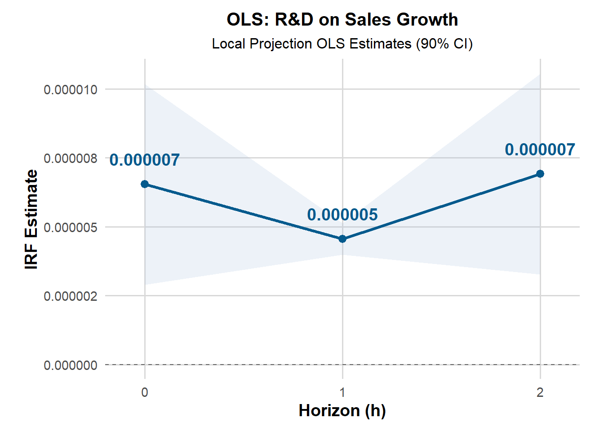
irf_ols_df %>%
mutate(
`IRF Estimate` = sprintf("%.8f", estimate),
`CI Lower` = sprintf("%.8f", conf_low),
`CI Upper` = sprintf("%.8f", conf_high)
) %>%
select(Horizon = horizon, `IRF Estimate`, `CI Lower`, `CI Upper`) %>%
flextable() %>%
set_header_labels(
Horizon = "Horizon (h)",
`IRF Estimate` = "IRF Estimate",
`CI Lower` = "90% CI Lower",
`CI Upper` = "90% CI Upper"
) %>%
autofit() %>%
theme_booktabs() %>%
fontsize(size = 11, part = "all") %>%
bold(part = "header") %>%
align(align = "center", part = "all") %>%
font(fontname = "Times New Roman", part = "all") Horizon (h) | IRF Estimate | 90% CI Lower | 90% CI Upper |
|---|---|---|---|
0 | 0.00000654 | 0.00000289 | 0.00001018 |
1 | 0.00000455 | 0.00000398 | 0.00000512 |
2 | 0.00000691 | 0.00000326 | 0.00001055 |
LP-2SLS
- use LP package
set.seed(007)
tmp_df <- merged_data1 %>%
select(
rd_intensity_percent,
patent_intensity_sales,
sales_growth_1y_percent,
sales_million,
year, country, icb_sector
)
valid_idx <- complete.cases(tmp_df)
merged_clean <- merged_data1[valid_idx, ]
endog_data_clean <- data.frame(
growth = merged_clean$sales_growth_1y_percent,
rd = merged_clean$rd_intensity_percent
)
shock_clean <- data.frame(
rd = merged_clean$rd_intensity_percent
)
instrum_clean <- data.frame(
patent = merged_clean$patent_intensity_sales
)
exog_data_clean <- data.frame(
sales = merged_clean$sales_million
)
contemp_data_clean <- model.matrix(
~ year + country + icb_sector,
data = merged_clean
)[, -1]
contemp_data_clean <- as.data.frame(contemp_data_clean)
results_lp_iv <- lp_lin_iv(
endog_data = endog_data_clean,
shock = shock_clean,
instrum = instrum_clean,
use_twosls = TRUE,
lags_endog_lin = 0,
trend = 0,
confint = 1.96,
hor = 5,
contemp_data = contemp_data_clean,
exog_data = exog_data_clean,
lags_exog = 1)
summary(results_lp_iv)$`Endog. Variable: growth`
R-sqrd. Adj. R-sqrd. F-stat p-value
h 1 0.010662663 -0.005145333 0.6745107 9.790593e-01
h 2 0.011046926 -0.004758816 0.6989185 9.682880e-01
h 3 0.010552486 -0.005265046 0.6671386 9.816678e-01
h 4 0.043231244 0.027932359 2.8257774 6.956642e-13
h 5 0.008585987 -0.007270783 0.5414714 9.990206e-01
$`Endog. Variable: rd`
R-sqrd. Adj. R-sqrd. F-stat p-value
h 1 1.00000000 1.0000000000 4.780601e+31 0.0000000
h 2 0.01471474 -0.0010323763 9.344403e-01 0.6262270
h 3 0.01521666 -0.0005263145 9.665683e-01 0.5532846
h 4 0.01529865 -0.0004468792 9.716187e-01 0.5417378
h 5 0.01497522 -0.0007793595 9.505312e-01 0.5898748mean_array <- results_lp_iv$irf_lin_mean
library(gt)
df_iv <- data.frame(
Horizon = 0:(dim(mean_array)[2] - 1),
Estimate = round(mean_array[1, ], 5),
CI_Lower = round(results_lp_iv$irf_lin_low[1, ], 5),
CI_Upper = round(results_lp_iv$irf_lin_up[1, ], 5)
)
df_iv %>%
gt() %>%
tab_header(
title = "Impulse Response of R&D Shock on Firm Growth",
subtitle = "Local Projections IV Estimation (95% CI)"
) %>%
fmt_number(
columns = c(Estimate, CI_Lower, CI_Upper),
decimals = 5
) %>%
cols_label(
Horizon = "Horizon (h)",
Estimate = "IRF Estimate",
CI_Lower = "Lower 95% CI",
CI_Upper = "Upper 95% CI"
) %>%
tab_style(
style = list(
cell_text(weight = "bold")
),
locations = cells_column_labels(everything())
) %>%
opt_table_font(font = google_font("Roboto")) %>%
tab_options(
table.border.top.color = "gray",
table.border.bottom.color = "gray",
column_labels.background.color = "white",
table_body.hlines.color = "gray90")| Impulse Response of R&D Shock on Firm Growth | |||
|---|---|---|---|
| Local Projections IV Estimation (95% CI) | |||
| Horizon (h) | IRF Estimate | Lower 95% CI | Upper 95% CI |
| 0 | −0.00010 | −0.00026 | 0.00005 |
| 1 | 0.00016 | −0.00045 | 0.00078 |
| 2 | −0.00010 | −0.00031 | 0.00010 |
| 3 | 0.00279 | −0.00359 | 0.00917 |
| 4 | −0.00007 | −0.00025 | 0.00010 |
- step by step
panel_lp_2sls <- merged_data %>%
arrange(company, year) %>%
group_by(company) %>%
mutate(
rd_lag1 = dplyr::lag(rd_intensity_percent, 1),
sales_lag1 = dplyr::lag(sales_million, 1),
patent_lag1 = dplyr::lag(patent_intensity_sales, 1),
sales_0 = dplyr::lead(sales_million, 0),
sales_1 = dplyr::lead(sales_million, 1),
sales_2 = dplyr::lead(sales_million, 2),
growth_lead_0 = log(sales_0) - log(sales_lag1),
growth_lead_1 = log(sales_1) - log(sales_lag1),
growth_lead_2 = log(sales_2) - log(sales_lag1)
) %>%
ungroup()
lp_2sls_h0 <- feols(
growth_lead_0 ~ sales_lag1 | icb_sector + country + year | rd_lag1 ~ patent_lag1,
data = panel_lp_2sls,cluster = ~ company)
lp_2sls_h1 <- feols(
growth_lead_1 ~ sales_lag1 | icb_sector + country + year | rd_lag1 ~ patent_lag1,
data = panel_lp_2sls,cluster = ~ company)
lp_2sls_h2 <- feols(
growth_lead_2 ~ sales_lag1 | icb_sector + country + year | rd_lag1 ~ patent_lag1,
data = panel_lp_2sls,cluster = ~ company)
summary(lp_2sls_h0)TSLS estimation - Dep. Var.: growth_lead_0
Endo. : rd_lag1
Instr. : patent_lag1
Second stage: Dep. Var.: growth_lead_0
Observations: 3,677
Fixed-effects: icb_sector: 37, country: 17, year: 9
Standard-errors: Clustered (company)
Estimate Std. Error t value Pr(>|t|)
fit_rd_lag1 7.38e-06 2.838e-06 2.60012 0.0096509 **
sales_lag1 -1.05e-06 3.400e-07 -3.07487 0.0022448 **
---
Signif. codes: 0 '***' 0.001 '**' 0.01 '*' 0.05 '.' 0.1 ' ' 1
RMSE: 0.618415 Adj. R2: 0.151434
Within R2: 0.155994
F-test (1st stage), rd_lag1: stat = 40,367.6, p < 2.2e-16, on 1 and 3,614 DoF.
Wu-Hausman: stat = 129.7, p < 2.2e-16, on 1 and 3,613 DoF.summary(lp_2sls_h1)TSLS estimation - Dep. Var.: growth_lead_1
Endo. : rd_lag1
Instr. : patent_lag1
Second stage: Dep. Var.: growth_lead_1
Observations: 3,259
Fixed-effects: icb_sector: 37, country: 17, year: 8
Standard-errors: Clustered (company)
Estimate Std. Error t value Pr(>|t|)
fit_rd_lag1 4.66e-06 2.71e-07 17.21276 < 2.2e-16 ***
sales_lag1 -1.30e-06 3.87e-07 -3.35503 0.0008664 ***
---
Signif. codes: 0 '***' 0.001 '**' 0.01 '*' 0.05 '.' 0.1 ' ' 1
RMSE: 0.484207 Adj. R2: 0.150538
Within R2: 0.144598
F-test (1st stage), rd_lag1: stat = 35,822.4 , p < 2.2e-16 , on 1 and 3,197 DoF.
Wu-Hausman: stat = 3.40665, p = 0.065026, on 1 and 3,196 DoF.summary(lp_2sls_h2)TSLS estimation - Dep. Var.: growth_lead_2
Endo. : rd_lag1
Instr. : patent_lag1
Second stage: Dep. Var.: growth_lead_2
Observations: 2,843
Fixed-effects: icb_sector: 37, country: 17, year: 7
Standard-errors: Clustered (company)
Estimate Std. Error t value Pr(>|t|)
fit_rd_lag1 8.06e-06 3.122e-06 2.58274 0.01014256 *
sales_lag1 -1.99e-06 5.820e-07 -3.41432 0.00070219 ***
---
Signif. codes: 0 '***' 0.001 '**' 0.01 '*' 0.05 '.' 0.1 ' ' 1
RMSE: 0.666357 Adj. R2: 0.190123
Within R2: 0.186612
F-test (1st stage), rd_lag1: stat = 29,994.6, p < 2.2e-16, on 1 and 2,782 DoF.
Wu-Hausman: stat = 210.9, p < 2.2e-16, on 1 and 2,781 DoF.etable(lp_2sls_h0, lp_2sls_h1, lp_2sls_h2,
headers = c("H=0", "H=1", "H=2"),
dict = c(rd_lag1 = "Lagged R&D Intensity",
sales_lag1 = "Lagged Sales",
patent_lag1 = "Patent Intensity (IV)")) lp_2sls_h0 lp_2sls_h1
H=0 H=1
Dependent Var.: growth_lead_0 growth_lead_1
Lagged R&D Intensity 7.38e-6** (2.84e-6) 4.66e-6*** (2.71e-7)
Lagged Sales -1.05e-6** (3.41e-7) -1.3e-6*** (3.87e-7)
Fixed-Effects: -------------------- --------------------
icb_sector Yes Yes
country Yes Yes
year Yes Yes
____________________ ____________________ ____________________
S.E.: Clustered by: company by: company
Observations 3,677 3,259
R2 0.16575 0.16644
Within R2 0.15599 0.14460
lp_2sls_h2
H=2
Dependent Var.: growth_lead_2
Lagged R&D Intensity 8.06e-6* (3.12e-6)
Lagged Sales -1.99e-6*** (5.82e-7)
Fixed-Effects: ---------------------
icb_sector Yes
country Yes
year Yes
____________________ _____________________
S.E.: Clustered by: company
Observations 2,843
R2 0.20722
Within R2 0.18661
---
Signif. codes: 0 '***' 0.001 '**' 0.01 '*' 0.05 '.' 0.1 ' ' 1extract_ci <- function(model) {
est_name <- "fit_rd_lag1"
ci <- confint(model, level = 0.90)
est <- coef(model)[est_name]
data.frame(
estimate = est,
conf_low = ci[est_name, 1],
conf_high = ci[est_name, 2])}
irf_2sls_df <- bind_rows(
extract_ci(lp_2sls_h0) %>% mutate(horizon = 0),
extract_ci(lp_2sls_h1) %>% mutate(horizon = 1),
extract_ci(lp_2sls_h2) %>% mutate(horizon = 2))
plot_2sls <- ggplot(irf_2sls_df, aes(x = horizon, y = estimate)) +
geom_ribbon(aes(ymin = conf_low, ymax = conf_high),
fill = "#66c2a5", alpha = 0.3) +
geom_line(color = "#238b45", size = 1.2) +
geom_point(size = 2.8, color = "#238b45") +
geom_text(
aes(label = label_number(accuracy = 0.000001)(estimate)),
vjust = -1.5, hjust = 0.5,
size = 5, fontface = "bold", color = "#238b45") +
geom_hline(yintercept = 0, linetype = "dashed", color = "gray40") +
scale_x_continuous(breaks = 0:2, expand = expansion(mult = 0.1)) +
scale_y_continuous(labels = label_number(accuracy = 0.000001)) +
coord_cartesian(clip = "off") +
labs(
title = "2SLS: R&D on Sales Growth",
subtitle = "Local Projection IV Estimates (90% CI)",
x = "Horizon (h)",
y = "IRF Estimate") +
theme_minimal(base_size = 14) +
theme(
plot.title = element_text(face = "bold", size = 15, hjust = 0.5),
plot.subtitle = element_text(hjust = 0.5, size = 12),
axis.title = element_text(face = "bold"),
axis.text = element_text(size = 11),
panel.grid.major = element_line(color = "gray85"),
panel.grid.minor = element_blank(),
plot.margin = margin(10, 20, 10, 20))
plot_2sls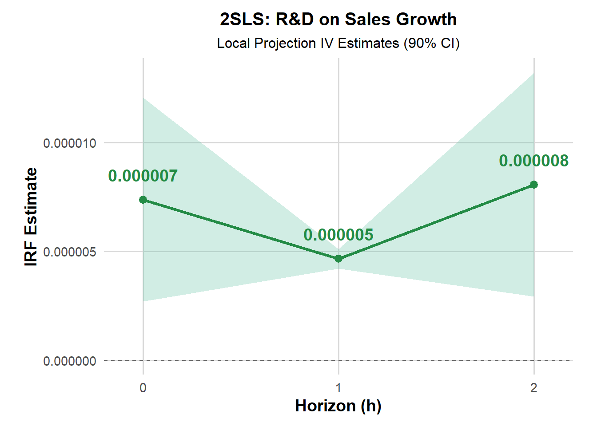
irf_2sls_df %>%
mutate(
`IRF Estimate` = sprintf("%.8f", estimate),
`CI Lower` = sprintf("%.8f", conf_low),
`CI Upper` = sprintf("%.8f", conf_high)
) %>%
select(Horizon = horizon, `IRF Estimate`, `CI Lower`, `CI Upper`) %>%
flextable() %>%
set_header_labels(
Horizon = "Horizon (h)",
`IRF Estimate` = "IRF Estimate",
`CI Lower` = "90% CI Lower",
`CI Upper` = "90% CI Upper"
) %>%
autofit() %>%
theme_booktabs() %>%
fontsize(size = 11, part = "all") %>%
bold(part = "header") %>%
align(align = "center", part = "all") %>%
font(fontname = "Times New Roman", part = "all") Horizon (h) | IRF Estimate | 90% CI Lower | 90% CI Upper |
|---|---|---|---|
0 | 0.00000738 | 0.00000270 | 0.00001206 |
1 | 0.00000466 | 0.00000421 | 0.00000511 |
2 | 0.00000806 | 0.00000292 | 0.00001321 |
plot_ols+plot_2sls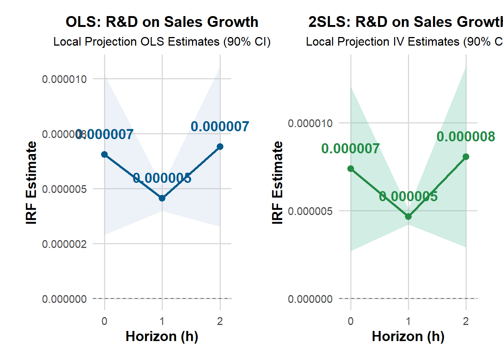
LP-GMM
contemp_mat <- model.matrix(
~ icb_sector + country + year,
data = merged_clean
)[, -1]
contemp_df <- as.data.frame(contemp_mat)
endog_df <- data.frame(
sales_growth = merged_clean$sales_growth_1y_percent
)
shock_df <- data.frame(
rd_shock = merged_clean$rd_intensity_percent
)
l_exog_df <- data.frame(
sales = merged_clean$sales_million)
data_set_df <- merged_clean %>%
select(
company,
year,
sales_growth_1y_percent,
rd_intensity_percent,
patent_intensity_sales,
sales_million,
icb_sector,
country,
everything())
results_lp_gmm <- lp_lin_panel(
data_set = data_set_df,
data_sample = "Full",
endog_data = "sales_growth_1y_percent",
cumul_mult = FALSE,
shock = "rd_intensity_percent",
diff_shock = TRUE,
iv_reg = FALSE,
instrum = "patent_intensity_sales",
panel_model = "within",
panel_effect = "individual",
robust_cov = NULL,
use_gmm = TRUE,
gmm_model = "twosteps",
gmm_effect = "individual",
gmm_transformation = "d",
c_exog_data = NULL,
l_exog_data = "sales_million",
lags_exog_data = 1,
c_fd_exog_data = NULL,
l_fd_exog_data = NULL,
lags_fd_exog_data = NaN,
confint = 1.96,
hor = 5)
summary(results_lp_gmm$reg_outputs[[1]])Oneway (individual) effect Two-steps model Difference GMM
Call:
plm::pgmm(formula = gmm_formula, data = yx_data, effect = specs$gmm_effect,
model = specs$gmm_model, transformation = specs$gmm_transformation,
index = c("cross_id", "date_id"))
Unbalanced Panel: n = 417, T = 7-9, N = 3718
Number of Observations Used: 2851
Residuals:
Min. 1st Qu. Median Mean 3rd Qu. Max.
-16641.71 -6.34 0.00 16.72 6.39 44574.49
Coefficients:
Estimate Std. Error z-value Pr(>|z|)
drd_intensity_percent -0.07227210 0.00004188 -1725.7123 < 2e-16 ***
sales_million_lag_1 -0.00139802 0.00072407 -1.9308 0.05351 .
---
Signif. codes: 0 '***' 0.001 '**' 0.01 '*' 0.05 '.' 0.1 ' ' 1
Sargan test: chisq(28) = 46.16588 (p-value = 0.016752)
Autocorrelation test (1): normal = -1.034348 (p-value = 0.30097)
Autocorrelation test (2): normal = 0.9901801 (p-value = 0.32209)
Wald test for coefficients: chisq(2) = 3397710 (p-value = < 2.22e-16)#summary(results_lp_gmm$reg_outputs[[2]])
summary(results_lp_gmm$reg_outputs[[3]])Oneway (individual) effect Two-steps model Difference GMM
Call:
plm::pgmm(formula = gmm_formula, data = yx_data, effect = specs$gmm_effect,
model = specs$gmm_model, transformation = specs$gmm_transformation,
index = c("cross_id", "date_id"))
Unbalanced Panel: n = 417, T = 5-7, N = 2884
Number of Observations Used: 2018
Residuals:
Min. 1st Qu. Median Mean 3rd Qu. Max.
-2219.73 -6.64 0.00 21.89 7.12 44584.60
Coefficients:
Estimate Std. Error z-value Pr(>|z|)
drd_intensity_percent 0.00256584 0.00047544 5.3968 6.786e-08 ***
sales_million_lag_1 -0.00060660 0.00080247 -0.7559 0.4497
---
Signif. codes: 0 '***' 0.001 '**' 0.01 '*' 0.05 '.' 0.1 ' ' 1
Sargan test: chisq(15) = 19.88466 (p-value = 0.1764)
Autocorrelation test (1): normal = -1.69731 (p-value = 0.089638)
Autocorrelation test (2): normal = -1.18176 (p-value = 0.2373)
Wald test for coefficients: chisq(2) = 29.67428 (p-value = 3.6001e-07)#summary(results_lp_gmm$reg_outputs[[4]])
#summary(results_lp_gmm$reg_outputs[[5]])gmm_pvals <- data.frame(
Horizon = paste0("h = ", 1:5),
Sargan_p = rep(NA_real_, 5),
AB1_p = rep(NA_real_, 5),
AB2_p = rep(NA_real_, 5),
stringsAsFactors = FALSE)
for (h in 1:5) {
mod_h <- results_lp_gmm$reg_outputs[[h]]
sargan_pval <- tryCatch({
plm::sargan(mod_h)$p.value
}, error = function(e) { NA_real_ })
ab1_pval <- tryCatch({
plm::mtest(mod_h, order = 1)$p.value
}, error = function(e) { NA_real_ })
ab2_pval <- tryCatch({
plm::mtest(mod_h, order = 2)$p.value
}, error = function(e) { NA_real_ })
gmm_pvals$Sargan_p[h] <- sargan_pval
gmm_pvals$AB1_p[h] <- ab1_pval
gmm_pvals$AB2_p[h] <- ab2_pval}
gmm_pvals_fmt <- gmm_pvals %>%
mutate(
Sargan_p = ifelse(is.na(Sargan_p), "", sprintf("%.4f", Sargan_p)),
AB1_p = ifelse(is.na(AB1_p), "", sprintf("%.4f", AB1_p)),
AB2_p = ifelse(is.na(AB2_p), "", sprintf("%.4f", AB2_p)))
colnames(gmm_pvals_fmt) <- c("Horizon", "Sargan p-value", "AB(1) p-value", "AB(2) p-value")
gmm_pvals_fmt %>%
kable("html",
escape = FALSE,
align = c("l", "c", "c", "c"),
row.names = FALSE,
caption = "LP-GMM （Twosteps DIF-GMM）: Horizon = 1-5 "
) %>%
kable_classic_2(full_width = FALSE, html_font = "Times New Roman", font_size = 14) %>%
row_spec(0, bold = TRUE, extra_css = "font-family: 'Times New Roman';") %>%
column_spec(1, width = "2.5cm", extra_css = "font-family: 'Times New Roman'; text-align: left;") %>%
column_spec(2:4, width = "2cm", extra_css = "font-family: 'Times New Roman'; text-align: center;")| Horizon | Sargan p-value | AB(1) p-value | AB(2) p-value |
|---|---|---|---|
| h = 1 | 0.0168 | 0.3010 | 0.3221 |
| h = 2 | 0.0312 | 0.3540 | 0.2850 |
| h = 3 | 0.1764 | 0.0896 | 0.2373 |
| h = 4 | 0.3168 | 0.2763 | 0.2474 |
| h = 5 | 0.2356 | 0.9237 | 0.3190 |
Summary Table
1.Three indicators of OLS
etable(ols_model, ols_model_growth, ols_model_log,
dict = c(rd_lag1 = "R&D (lagged)",
growth_lag1 = "Lagged Growth",
size_lag1 = "Lagged Size"),
headers = c("Intensity", "Growth", "Log Level"),
title = "Comparison of R&D Measures in OLS Regressions",
tex = FALSE) ols_model ols_model_growth ols_model_log
Intensity Growth Log Level
Dependent Var.: growth growth growth
R&D (lagged) 2.15e-5*** (4.8e-6) 0.0003 (0.0002) 0.0075 (0.0059)
Lagged Growth -0.5543*** (0.0426) -0.5715*** (0.0408) -0.5710*** (0.0411)
Lagged Size -5.5e-7. (3.24e-7) -5.55e-7 (3.31e-7) -7.96e-7. (4.38e-7)
Fixed-Effects: ------------------- ------------------- -------------------
icb_sector Yes Yes Yes
country Yes Yes Yes
year Yes Yes Yes
_______________ ___________________ ___________________ ___________________
S.E.: Clustered by: icb_sector by: icb_sector by: icb_sector
Observations 3,227 3,227 3,227
R2 0.43164 0.42294 0.42273
Within R2 0.42887 0.42012 0.41991
---
Signif. codes: 0 '***' 0.001 '**' 0.01 '*' 0.05 '.' 0.1 ' ' 1